<!doctype html>
<html lang="en">
<head>
  <meta charset="utf-8">
  <meta name="viewport" content="width=device-width, initial-scale=1">
  <title>arxiv digest — 2026-09-01</title>
  <style>
:root {
  --bg: #ffffff;
  --fg: #1f2328;
  --muted: #59636e;
  --border: #d0d7de;
  --card: #f6f8fa;
  --link: #0969da;
}
body {
  max-width: 980px;
  margin: 0 auto;
  padding: 2rem 1rem 5rem;
  font-family: -apple-system, BlinkMacSystemFont, "Segoe UI", Helvetica, Arial, sans-serif;
  line-height: 1.55;
  color: var(--fg);
  background: var(--bg);
}
a { color: var(--link); }
img { max-width: 100%; height: auto; }
pre, code { background: var(--card); border-radius: 6px; }
pre { padding: 1rem; overflow-x: auto; }
blockquote { border-left: 4px solid var(--border); padding-left: 1rem; color: var(--muted); }
details { margin: 0.6rem 0; }
summary { cursor: pointer; font-weight: 600; }
.paper-figures-scroll {
  display: flex;
  gap: 1rem;
  overflow-x: auto;
  overscroll-behavior-x: contain;
  padding: 0.75rem 0.25rem 1rem;
  margin: 1rem 0 1.25rem;
  border-top: 1px solid var(--border);
  border-bottom: 1px solid var(--border);
  scroll-snap-type: x proximity;
}
.paper-figure-card {
  flex: 0 0 min(260px, 72vw);
  scroll-snap-align: start;
  background: var(--card);
  border: 1px solid var(--border);
  border-radius: 12px;
  padding: 0.55rem;
}
.paper-figure-card img {
  display: block;
  width: 100%;
  max-height: 240px;
  object-fit: contain;
  background: white;
  border-radius: 8px;
}
.paper-figure-caption {
  display: block;
  margin-top: 0.5rem;
  color: var(--muted);
  font-size: 0.85rem;
}
.figure-strip-hint {
  color: var(--muted);
  font-size: 0.9rem;
  margin-bottom: -0.3rem;
}
</style>
  <!-- MathJax: renders $...$ inline math and $$...$$ display math, plus
       \(...\) and \[...\]. Loaded from the official CDN; works offline
       once cached. Configured to skip code/pre blocks so arxiv IDs that
       look like dollar amounts don't get mangled. -->
  <script>
    window.MathJax = {
      tex: {
        inlineMath: [['$', '$'], ['\\(', '\\)']],
        displayMath: [['$$', '$$'], ['\\[', '\\]']],
        processEscapes: true,
        processEnvironments: true
      },
      options: {
        skipHtmlTags: ['script', 'noscript', 'style', 'textarea', 'pre', 'code'],
        ignoreHtmlClass: 'tex2jax_ignore',
        processHtmlClass: 'tex2jax_process'
      }
    };
  </script>
  <script id="MathJax-script" async
    src="https://cdn.jsdelivr.net/npm/mathjax@3/es5/tex-chtml.js"></script>
</head>
<body>
<header style="background-color: #333; color: white; padding: 15px; margin-bottom: 20px;">
  <h1 style="margin: 0; font-size: 24px;">
    <a href="https://ochelpan.github.io/arXiv_clean/" style="color: white; text-decoration: none;">Main</a>
  </h1>
</header>

<h1>Daily arXiv Report</h1>

<hr>
<p>
<a href="index.html">← Index</a>
 · <a href="papers_02.html">← Previous</a> · <a href="papers_04.html">Next →</a>
</p>
<hr>

<h2>Papers 41–60</h2>
<p><a id="paper-2608.27952"></a></p>
<h3 id="shape-evolution-and-dynamics-of-deformable-ring"><a href="http://arxiv.org/abs/2608.27952v1">Shape Evolution and Dynamics of Deformable Ring</a></h3>
<p><strong>Authors:</strong> Arun Kumar, Partha Sarathi Mondal, Pritha Dolai, Shradha Mishra<br>
<strong>Type:</strong> theory · <strong>Category:</strong> statistical mechanics · <strong>PDF:</strong> <a href="https://arxiv.org/pdf/2608.27952v1">https://arxiv.org/pdf/2608.27952v1</a><br>
<strong>Analysis basis:</strong> full PDF text, analyzed in chunks
<strong>Topic relevance:</strong> <code>non-equilibrium universality</code> <strong>3/5</strong> · <code>Frenkel-Kontorova</code> <strong>1/5</strong> · <code>driven-dissipative phase transition</code> <strong>1/5</strong> · <code>methods for driven-dissipative</code> <strong>1/5</strong></p>
<div class="figure-strip-hint">↔ Scroll figures horizontally</div>
<div class="paper-figures-scroll">
<figure class="paper-figure-card">
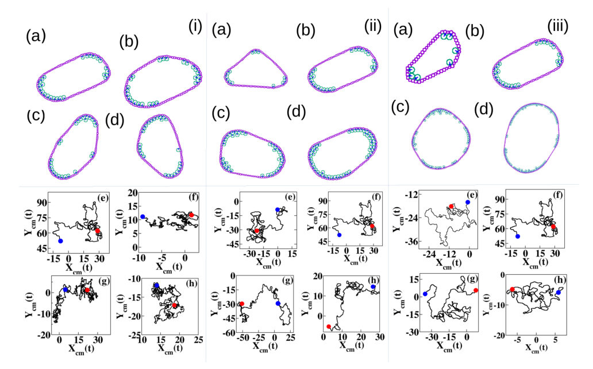
<figcaption class="paper-figure-caption"><b>Fig 1.</b> FIG. 1: Shape transformations of a deformable ring under different system parameters. Configurations and corre- sponding center of mass trajectories: (i) fixed Nbeads = 100, ϕ = 0.10, and for different Dr = 0.01, 0.03, 0.05, and 0.07, shown in (a-d), (e-h), respectively. (ii) fixed Nbeads = 100, Dr = 0.10, and for different ϕ = 0.05, 0.10, 0.15, and 0.20, shown in (a-d), (e-h), respectively. (iii) fixed Dr = 0.01, ϕ = 0.1, and for different Nbeads = 50, 100, 150, and 200, shown in (a-d), (e-h), respectively. The magenta and cyan circles in (a-d) in all three (i)-(iii) columns represent the beads and ABPs, respectively. The red and blue solid circles represent the start and end point of a...</figcaption>
</figure>
<figure class="paper-figure-card">
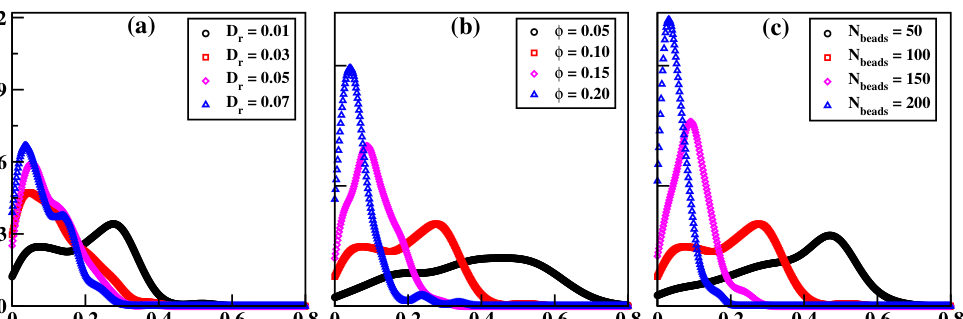
<figcaption class="paper-figure-caption"><b>Fig 2.</b> FIG. 2: Probability distribution P(∆) of the asphericity parameter ∆. (a) At fixed Nbeads = 100, ϕ = 0.10 and for different Dr = 0.01, 0.03, 0.05, and 0.07. (b) At fixed Nbeads = 100, Dr = 0.10, and for different ϕ = 0.05, 0.10, 0.15, and 0.20. (c) At fixed Dr = 0.01, ϕ = 0.1 and for different Nbeads = 50, 100, 150, and 200.</figcaption>
</figure>
<figure class="paper-figure-card">
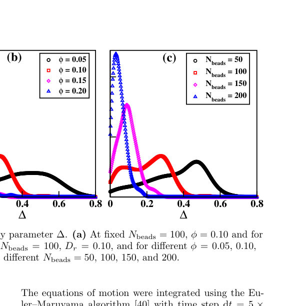
<figcaption class="paper-figure-caption"><b>Fig 3.</b> Fig. 1(i) illustrates ring configurations for different ro- tational diffusion coefficients, Dr = 0.01, 0.03, 0.05, and 0.07, arranged from Fig. 1(i)(a-d) respectively. In these figures, the packing fraction is kept fixed at ϕ = 0.1, and the ring consists of Nbeads = 100 beads. As Dr increases, the orientations of the active particles randomize more rapidly, reducing the persistence of the propulsive forces exerted on the ring. Consequently, the active particles are unable to introduce significant force in a particular direction, resulting in a weaker ring deformation. As a result, ring shape fluctuations decrease, and the ring gradually approaches to a more circular configuration...</figcaption>
</figure>
<figure class="paper-figure-card">
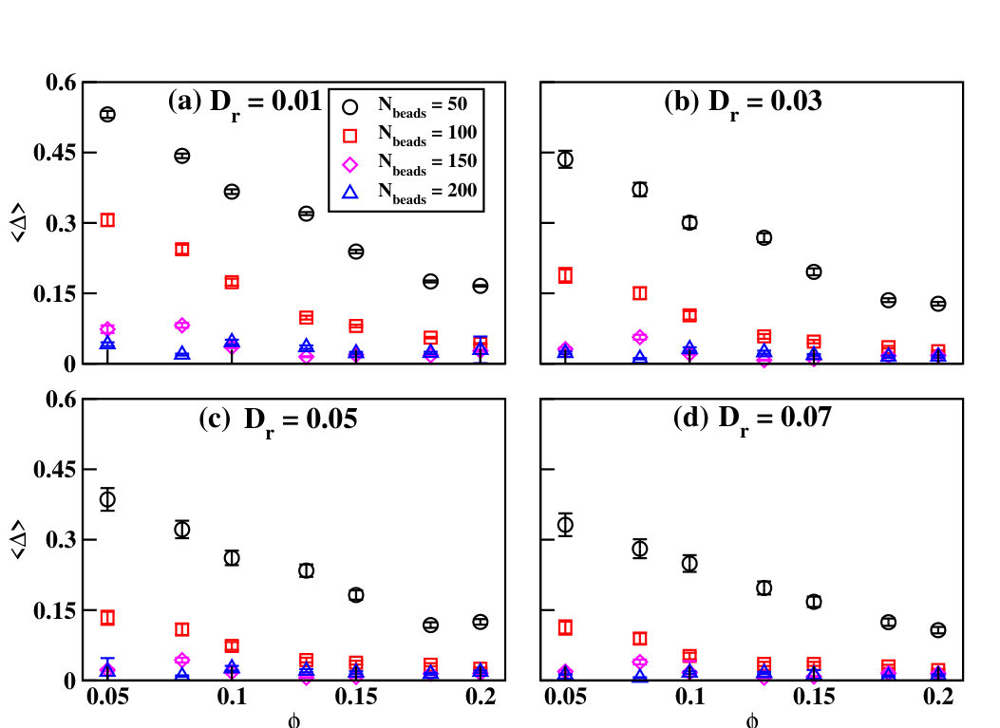
<figcaption class="paper-figure-caption"><b>Fig 4.</b> FIG. 3: Variation of the mean asphericity ⟨∆⟩vs. ϕ for different Dr = 0.01, 0.03, 0.05, and 0.07. The different curves in each window in for different Nbeads = 50, 100, 150, and 200. Error bars represent the standard deviation obtained from independent realizations.</figcaption>
</figure>
<figure class="paper-figure-card">
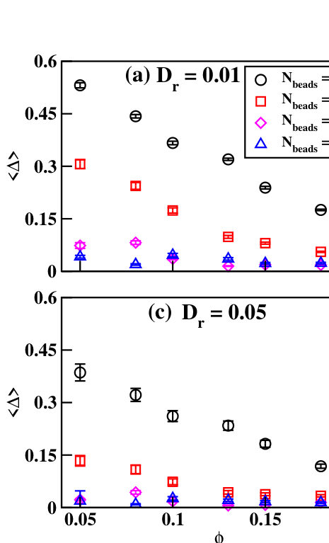
<figcaption class="paper-figure-caption"><b>Fig 5.</b> Fig. 1(ii) shows the variation of the packing fraction of the ABPs while keeping the ring size fixed at Nbeads = 100 and the rotational diffusion coefficient fixed at Dr = 0.01. From Fig. 1(ii)(a-d), the packing fraction increases progressively. At low packing fractions, collisions be- tween the active particles and the ring are relatively in- frequent, resulting in an uneven distribution of forces along the ring. Consequently, the ring exhibits pro- nounced local shape deformations. As the packing frac- tion increases, particle bead collisions become more fre- quent and are distributed more uniformly along the ring boundary (Movie 2). This behavior is also evident from the corresponding...</figcaption>
</figure>
</div>

<p><strong>Summary.</strong> This paper numerically investigates the collective dynamics of active particles confined within a deformable ring structure. By controlling parameters like particle density and activity, the researchers show that the internal activity drives the ring towards a more stable, circular shape. The study successfully models the emergent center-of-mass motion, demonstrating that the complex internal activity can be accurately described by an effective single-particle model.</p>
<p><strong>Why it may be interesting.</strong> This work provides a concrete example of how non-equilibrium active matter can generate collective, macroscopic behavior (like directed motion or shape stabilization) from local particle interactions, which is a key area of modern statistical physics.</p>
<details>
<summary>Detailed structure</summary>
<p><strong>Main problem.</strong> The study investigates how the internal dynamics of active particles confined within a deformable ring influence the ring's overall shape evolution and macroscopic center-of-mass motion.</p>
<p><strong>Main result.</strong> The ring's shape is stabilized and driven towards a circular configuration by increasing the packing fraction, rotational diffusion coefficient, or the number of boundary beads. Furthermore, the collective activity generates emergent dynamics analogous to a single effective active particle.</p>
<p><strong>Method.</strong> The research employs numerical simulations using Langevin dynamics for both the passive boundary beads and the active Brownian particles, supplemented by analytical derivations for Mean-Squared Displacement (MSD) based on effective particle models.</p>
<p><strong>Model / system.</strong> The system consists of a deformable closed ring formed by passive beads connected by springs, filled with Active Brownian Particles (ABPs). The dynamics are governed by coupled Langevin equations incorporating harmonic, repulsive, and active self-propulsion forces.</p>
<p><strong>Key observables.</strong> Asphericity parameter ($\Delta(t)$), Mean-Squared Displacement ($  ext{MSD}$) of the center of mass, and effective diffusion coefficients ($D_{eff}, 
u_r$).</p>
<p><strong>Important parameters / regimes.</strong> Rotational diffusion coefficient ($D_r$), packing fraction ($\phi$), number of beads ($N_{	ext{beads}}$), and self-propulsion speed ($v_0$).</p>
<p><strong>Assumptions / limitations.</strong> The system is modeled using overdamped Langevin dynamics, and the collective motion is successfully mapped onto an effective Self-Propelled Particle (SPP) model for analysis.</p>
<p><strong>Figures summary.</strong> Figures illustrate shape transformations under varying parameters ($N_{	ext{beads}}$, $\phi$, $D_r$), show the probability distribution $P(\Delta)$ for shape fluctuations, and compare the MSD of the full ring simulation against the effective SPP model.</p>
<p><strong>Paper structure.</strong> The paper systematically analyzes the dynamics by first defining the full coupled particle model, then quantifying shape fluctuations using the asphericity parameter, and finally deriving the effective large-scale dynamics (MSD) by treating the ring as a single effective active particle.</p>
</details>
<details>
<summary>Abstract</summary>
<p>We numerically investigate the dynamics of a deformable closed ring filled with active particles. The ring is modeled as a flexible boundary made up of passive beads interacting with a harmonic spring force. The interior of the ring is filled with active Brownian particles (ABPs), and their activity is controlled through the rotational diffusion coefficient. We explore how, by systematically varying the activity of ABPs, packing fraction, and size of the ring, we can control the shape deformation and dynamics of the ring. At low packing fractions, low rotational diffusion coefficients, and smaller ring sizes, the ring exhibits highly irregular and strongly deformed shapes due to the uneven spatial arrangement of active particles along the boundary. Increasing the packing fraction, rotational diffusion coefficient, or ring size promotes a more even distribution of active particles within the ring, thereby suppressing shape deformations and fluctuations, driving the ring toward a more circular shape. We further analyze the mean-squared displacement (MSD) of the ring's center of mass and observe a crossover from ballistic to diffusive dynamics, which can be tuned by varying the system parameters. Our results demonstrate that, despite its internal complexity and deformability, the ring exhibits emergent behavior analogous to that of a single effective active particle. This study provides insight into the collective effects of confined active matter and the resulting macroscopic dynamics of deformable systems.</p>
</details>
<p><sub><a href="#top">↑ back to top</a></sub></p>

<p><a id="paper-2608.28167"></a></p>
<h3 id="three-dimensional-optical-vortices-in-nonlinear-bessel-waveguides"><a href="http://arxiv.org/abs/2608.28167v1">Three-dimensional optical vortices in nonlinear Bessel waveguides</a></h3>
<p><strong>Authors:</strong> Carlos F. Sánchez, Humberto Michinel, Boris Malomed, Ángel Paredes, José R. Salgueiro<br>
<strong>Type:</strong> theory · <strong>Category:</strong> other · <strong>PDF:</strong> <a href="https://arxiv.org/pdf/2608.28167v1">https://arxiv.org/pdf/2608.28167v1</a><br>
<strong>Analysis basis:</strong> full PDF text, analyzed in chunks
<strong>Topic relevance:</strong> <code>analog quantum simulation</code> <strong>3/5</strong> · <code>interference shaping light</code> <strong>3/5</strong></p>
<div class="figure-strip-hint">↔ Scroll figures horizontally</div>
<div class="paper-figures-scroll">
<figure class="paper-figure-card">
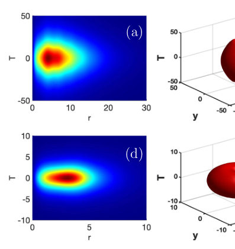
<figcaption class="paper-figure-caption"><b>Fig 1.</b> Fig. 1 Two examples of numerical solutions of Eq. (8) for the Bessel lattice defined as per Eqs. (4) and (6), with ℓ= 1. Top row correspond to a solution with parameters γ = 2 and β = 0.05. Shown are views of the contour in (a) of the field in the plane (r, T), and the 3D isosurface view in (b). Panel (d) shows the the spatial and temporal profiles, plotted in cross-sections T = 0 and r = rmax, where rmax is the radial coordinate corresponding to the maximum of |ψ|. Botom row shows contour (d), isosurface (e) and profiles (f) for another solution with parameters γ = 2 and β = 0.25.</figcaption>
</figure>
<figure class="paper-figure-card">
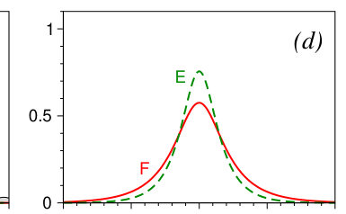
<figcaption class="paper-figure-caption"><b>Fig 2.</b> Fig. 2 Examples of the numerically calculated profiles of the vortex bullets along r and T (the left and right panels, respectively) for β = 0.25 and γ = 2 in (a,b), and γ = 4 in (c,d). The thin black line bounding the shadowed area is the normalized squared-Bessel profile, J2 0(r). The colored solid and dashed curves correspond, severally, to the Bessel and Gaussian waveguiding structures. The profiles labelled with letters correspond to the white dots in Figs. 5 and 7 marked with the same labels.</figcaption>
</figure>
<figure class="paper-figure-card">
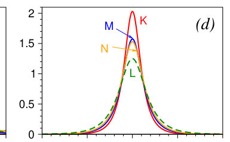
<figcaption class="paper-figure-caption"><b>Fig 3.</b> Fig. 3 The same as in Fig. 2, but for the AWG, with γ &lt; 0 and β = 0.2. Top and bottom panels correspond to γ = −2 and γ = −4 respectively. The profiles labelled with letters correspond to the white dots marked with the same labels in Figs. 6 and 7.</figcaption>
</figure>
<figure class="paper-figure-card">
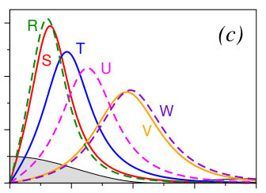
<figcaption class="paper-figure-caption"><b>Fig 4.</b> Fig. 4 The same as in Fig. 3, but for β = 1.6. The top and bottom panels correspond to γ = −2 and γ = −4, respectively. The profiles labelled with letters correspond to the white dots marked with the same labels in Figs. 6 and 7.</figcaption>
</figure>
<figure class="paper-figure-card">
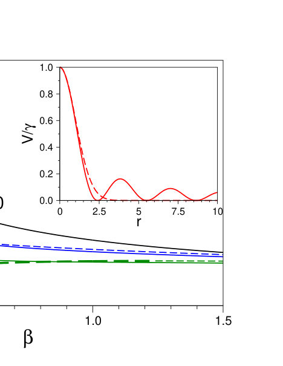
<figcaption class="paper-figure-caption"><b>Fig 5.</b> Fig. 5 Norm N of several families of stationary LB solutions vs. the propagation constant β for the values of the waveguide strength γ = 0, 2, and 4. Continuous and dashed curves correspond, respectively, to the LBs maintained by the Bessel and Gaussian waveguiding structures. Thicker sections of the curves indicate the domain where LBs are stable. The black curve with γ = 0 is included for the comparison. White empty dots correspond to the LB profiles of the same label plotted in Fig. 2. The filled dot indicates the stable LB in Fig. 1. The inset shows the respective waveguiding profiles, viz., the squared-Bessel and Gaussian ones (continuous and dashed curve, respectively).</figcaption>
</figure>
</div>

<p><strong>Summary.</strong> This paper theoretically analyzes how light bullets carrying orbital angular momentum propagate in nonlinear waveguides structured by Bessel potentials. By solving the nonlinear Schrödinger equation, the authors show that these structures stabilize the light against collapse, revealing complex multi-stability windows in both guiding and antiwaveguiding regimes. The findings advance the understanding of nonlinear light localization in multidimensional photonic systems.</p>
<p><strong>Why it may be interesting.</strong> This work is highly relevant to quantum optics and open quantum systems as it deals with nonlinear wave localization, structured light, and stability analysis in complex media, which has analogs in quantum field theories.</p>
<details>
<summary>Detailed structure</summary>
<p><strong>Main problem.</strong> The study investigates the formation, stability, and propagation dynamics of three-dimensional optical vortices (light bullets) within nonlinear Bessel-structured waveguides.</p>
<p><strong>Main result.</strong> The paper demonstrates that structured potentials, particularly the squared-Bessel profile, can stabilize these vortices, preventing collapse that occurs in uniform media, and reveals complex multi-stability regimes.</p>
<p><strong>Method.</strong> The analysis involves solving a nonlinear eigenvalue problem derived from the Nonlinear Schrödinger Equation (NLSE) using numerical techniques like the finite-differences scheme.</p>
<p><strong>Model / system.</strong> The system models light propagation in a nonlinear medium characterized by Kerr nonlinearity and a graded-index potential, which can be Gaussian or a squared-Bessel profile. The governing equation is a modified NLSE incorporating transverse and temporal dispersion/nonlinearity.</p>
<p><strong>Key observables.</strong> The 3D norm (N) of the stationary light bullet, the propagation constant (beta), and the stability determined by the Vakhitov-Kolokolov (VK) criterion.</p>
<p><strong>Important parameters / regimes.</strong> Vortex topological charge (l=1), waveguide strength parameter (gamma), and the sign of dispersion/nonlinearity (sigma, alpha).</p>
<p><strong>Assumptions / limitations.</strong> The analysis relies on a specific ansatz for the solution and assumes the validity of the transformation used to simplify the radial derivative structure.</p>
<p><strong>Figures summary.</strong> Figures illustrate numerical solutions of the governing equations for Bessel lattices, show profiles of vortex bullets in both Bessel and Gaussian waveguides, and plot N vs. beta or N vs. gamma to map out stable/unstable regions.</p>
<p><strong>Paper structure.</strong> The paper develops the governing nonlinear eigenvalue problem, analyzes the stability using the VK criterion, and then presents detailed numerical results comparing the behavior of light bullets in positive (waveguiding) and negative (antiwaveguiding) potential regimes.</p>
</details>
<details>
<summary>Abstract</summary>
<p>We explore the formation, stability, and propagation dynamics of light bullets carrying orbital angular momentum (vorticity) in Bessel-structured nonlinear graded-index waveguides. While these waves are prone to the collapse in uniform three-dimensional media, we demonstrate that their stabilization is provided by a squared-Bessel index profile in the plane orthogonal to the propagation direction, which may play the role of the waveguiding or antiwaveguiding potential. Different solution families are obtained, revealing a variety of power-vs.-propagation-constant diagrams, characterizing the coexistence of multiple families. We analyze the propagation dynamics in a wide experimentally accessible parameter range. Our results contribute to the understanding of nonlinear light localization in multidimensional settings and suggest new possibilities for using structured light in advanced photonic applications.</p>
</details>
<p><sub><a href="#top">↑ back to top</a></sub></p>

<p><a id="paper-2608.27613"></a></p>
<h3 id="criticality-and-universality-in-network-dismantling"><a href="http://arxiv.org/abs/2608.27613v1">Criticality and universality in network dismantling</a></h3>
<p><strong>Authors:</strong> Lorenzo Cirigliano, Claudio Castellano, Minsuk Kim, Filippo Radicchi, Hanlin Sun<br>
<strong>Type:</strong> theory · <strong>Category:</strong> statistical mechanics · <strong>PDF:</strong> <a href="https://arxiv.org/pdf/2608.27613v1">https://arxiv.org/pdf/2608.27613v1</a><br>
<strong>Analysis basis:</strong> full PDF text, analyzed in chunks
<strong>Topic relevance:</strong> <code>non-equilibrium universality</code> <strong>3/5</strong> · <code>analog quantum simulation</code> <strong>1/5</strong> · <code>driven-dissipative phase transition</code> <strong>1/5</strong></p>
<div class="figure-strip-hint">↔ Scroll figures horizontally</div>
<div class="paper-figures-scroll">
<figure class="paper-figure-card">
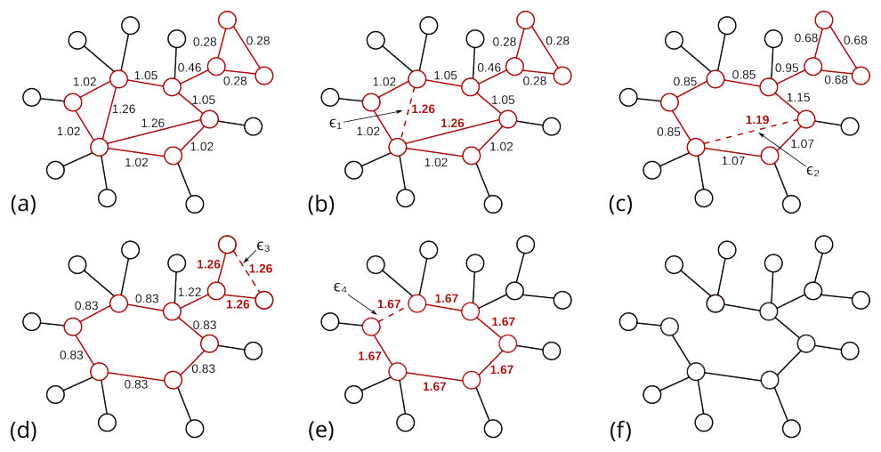
<figcaption class="paper-figure-caption"><b>Fig 1.</b> FIG. 1. Biased adaptive percolation. Schematic representation of a biased and adaptive percolation process, Eq. (1), with bias a = +∞. Scores are s(e, Gt−1) &gt; 0 for the edges in the 2-core (highlighted in red), and zero otherwise; their values are reported. In this example, edge scores are equal to their non-backtracking centralities (NBC), Eq. (15), (multiplied by a factor of 10) and the process represented is the max-NBC-biased percolation described in details in Sec. IV. (a) The graph G0 with all non-zero scores reported. Panels (b)-(e) correspond to the different stages of the process: (b) t = 1, (c) t = 2, (d) t = 3, and (e) t = 4. At each step, the edge with the highest score (bold...</figcaption>
</figure>
<figure class="paper-figure-card">
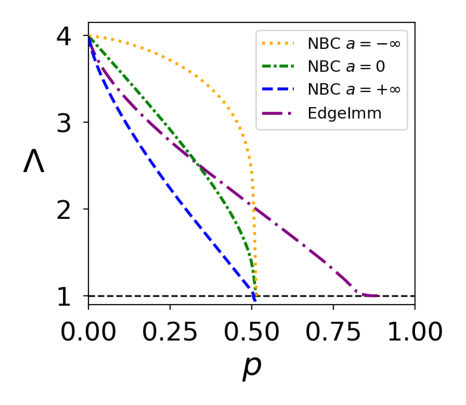
<figcaption class="paper-figure-caption"><b>Fig 2.</b> FIG. 2. Quasi-optimality of NBC-biased percolation. The leading eigenvalue Λ of the NB matrix obtained via dif- ferent edge-removal strategies is shown as a function of the fraction of removed edges p. Link removal strategies NBC with different bias parameter a are compared. We also show the benchmark strategy “EdgeImm” proposed in Ref. [40]. Each curve is obtained by averaging results over Q = 100 instances of the Erd˝os–R´enyi model with size N = 104 and average degree ⟨k⟩= 4.</figcaption>
</figure>
<figure class="paper-figure-card">
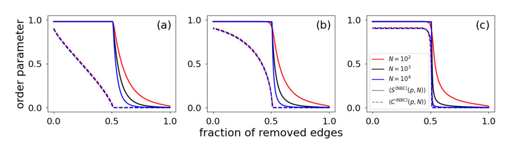
<figcaption class="paper-figure-caption"><b>Fig 3.</b> FIG. 3. NBC-biased percolation on Erd˝os-R´enyi graphs. (a) Relative size of the giant component ⟨S(NBC)(p, N)⟩and of the 2-core ⟨C(NBC)(p, N)⟩as a function of the fraction p of edges removed from the initial graph. The initial graphs are instances of the Erd˝os-R´enyi (ER) model with average degree ⟨k⟩= 4 and different number of nodes N. Here, edges are selected based on the NBC-biased protocol with bias parameter a = −∞. Results are averaged over Q = 10000 graph instances. (b) Same as in (a), but with a = 0. (c) Same as in (a) and (b), but for a = +∞.</figcaption>
</figure>
<figure class="paper-figure-card">
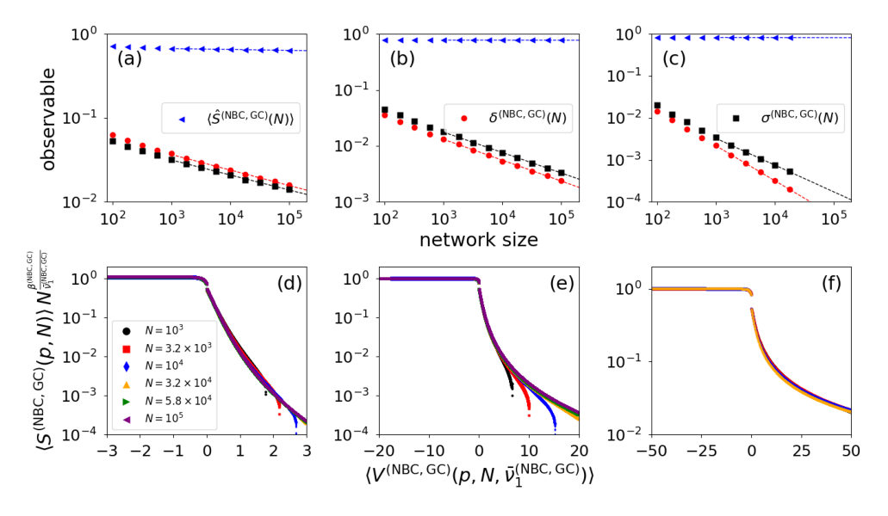
<figcaption class="paper-figure-caption"><b>Fig 4.</b> FIG. 4. Critical properties of the GC transition for NBC-biased percolation on Erd˝os-R´enyi graphs. (a) We test the scaligns of Eq. (7), (8) and (9) for NBC-biased percolation with a = −∞. Averages are taken over Q = 10000 instances of the biased percolation model. The slopes of the dashed lines identify the scaling exponents. Best estimates are reported in Tab. I. (b) and (c) Same as in panel (a), but for a = 0 and a = +∞, respectively. (d-e) We test the finite-size scaling relationship of Eq. (11) for the NBC-biased percolation with bias parameter respectively equal to a = −∞, 0 and +∞.</figcaption>
</figure>
<figure class="paper-figure-card">
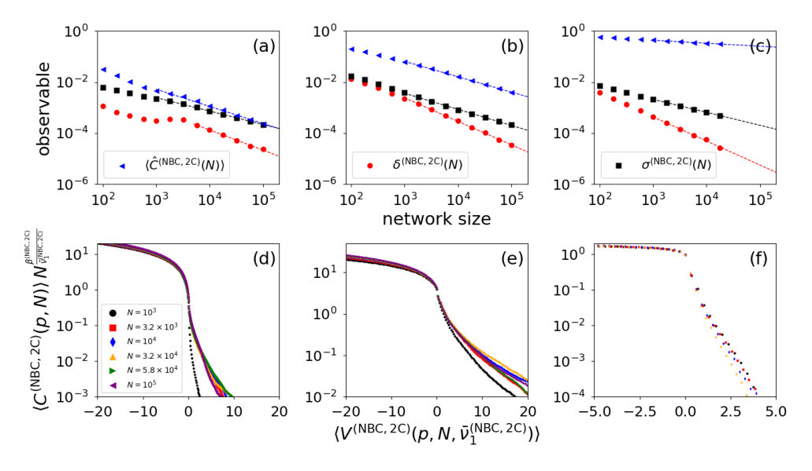
<figcaption class="paper-figure-caption"><b>Fig 5.</b> FIG. 5. Critical properties of the 2C transition for NBC-biased percolation on Erd˝os-R´enyi graphs. Same as in Fig. 4, but for the 2C transition. The best of the critical exponents are reported in Tab. I.</figcaption>
</figure>
</div>

<p><strong>Summary.</strong> This paper explores the physics of network dismantling by modeling edge removal using adaptive biased percolation. The key finding is that the structural collapse of the network exhibits a universal phase transition, meaning the critical behavior is independent of the underlying network's specific topology. This suggests a general, topology-agnostic theory for understanding network robustness.</p>
<p><strong>Why it may be interesting.</strong> While focused on classical network theory, the study of universal critical exponents and phase transitions in complex systems shares deep mathematical and conceptual links with critical phenomena studied in quantum many-body physics.</p>
<details>
<summary>Detailed structure</summary>
<p><strong>Main problem.</strong> The paper investigates the physics of network dismantling, specifically how the structural connectivity of a network changes when nodes or edges are removed, focusing on the thermodynamic limit.</p>
<p><strong>Main result.</strong> The network dismantling process exhibits a universal phase transition where both the giant connected component and the largest 2-core disappear abruptly, suggesting a topology-agnostic theory can explain this critical behavior.</p>
<p><strong>Method.</strong> The authors employ biased and adaptive percolation processes, analyzing critical behavior using finite-size scaling (FSS) analysis on synthetic and real network models.</p>
<p><strong>Model / system.</strong> The system is an unweighted, undirected graph undergoing edge removal. The removal process is governed by an adaptive biased percolation rule, such as the max-NBC model, which prioritizes removing edges based on local topological centrality.</p>
<p><strong>Key observables.</strong> Giant Connected Component (GC) size, largest 2-core (2C) size, and corresponding critical exponents ($eta, ar{
u}$).</p>
<p><strong>Important parameters / regimes.</strong> The control parameter is the fraction of removed edges ($p=t/E$); the analysis compares different degree distributions (e.g., Poisson vs. power-law).</p>
<p><strong>Assumptions / limitations.</strong> The analysis often relies on approximations, such as using a greedy quasi-optimal algorithm for the intractable optimal removal sequence, and assumes averaging over many network realizations.</p>
<p><strong>Figures summary.</strong> The notes reference schematic figures illustrating the stages of biased adaptive percolation and tables summarizing calculated critical exponents for various network types and biases.</p>
<p><strong>Paper structure.</strong> The paper develops from defining the general framework of biased percolation, moves to specific models like max-NBC, derives analytical tools using spectral decomposition, and concludes by presenting quantitative results on universal critical exponents.</p>
</details>
<details>
<summary>Abstract</summary>
<p>Identifying the smallest set of elements whose removal dismantle a complex network, known as the network dismantling problem, is a fundamental task with many practical applications. Whereas network dismantling has been extensively studied over the past decade, most work has focused on developing efficient algorithms for large but finite networks. By contrast, the physics of the network dismantling process, namely how the network structural connectivity is affected by the removal of nodes or edges, remains largely unexplored in the thermodynamic limit. Here, we shed light on this understudied aspect of network dismantling by introducing an adaptive biased percolation process able to optimally dismantle a network. Through a systematic analysis of synthetic network models, we find that the proposed percolation process displays a universal phase transition, characterized by the abrupt and simultaneous disappearance of both the giant connected component and the largest 2-core, across networks with markedly different degree distributions. Simulations on real networks further support this universality, indicating that the physics of network dismantling is insensitive to a broad range of topological properties. Together, these results suggest that a topology-agnostic theory could be developed to explain the critical behavior of network dismantling.</p>
</details>
<p><sub><a href="#top">↑ back to top</a></sub></p>

<p><a id="paper-2608.28141"></a></p>
<h3 id="lattice-greens-function-of-the-hyperkagome-lattice-modular-uniformization-at-level-30-from-an-orthogonal-differential-galois-group"><a href="http://arxiv.org/abs/2608.28141v1">Lattice Green's function of the hyperkagome lattice: modular uniformization at level 30 from an orthogonal differential Galois group</a></h3>
<p><strong>Authors:</strong> Bryan Nasr, Jean-Marie Maillard<br>
<strong>Type:</strong> theory · <strong>Category:</strong> other · <strong>PDF:</strong> <a href="https://arxiv.org/pdf/2608.28141v1">https://arxiv.org/pdf/2608.28141v1</a><br>
<strong>Analysis basis:</strong> full PDF text, analyzed in chunks
<strong>Topic relevance:</strong> <code>analog quantum simulation</code> <strong>3/5</strong> · <code>Keldysh / 2PI / non-Gaussian methods</code> <strong>2/5</strong></p>
<div class="figure-strip-hint">↔ Scroll figures horizontally</div>
<div class="paper-figures-scroll">
<figure class="paper-figure-card">
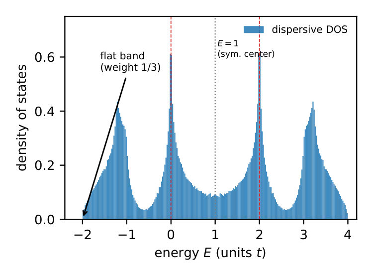
<figcaption class="paper-figure-caption"><b>Fig 1.</b> Figure 1: Density of states of the hyperkagome tight-binding model at unit hopping. Four flat bands at E = −2 carry weight 1/3; the eight dispersive bands fill [−2, 4] and are exactly symmetric about E = 1, with principal van Hove singularities at E = 0, 2 (dashed) and weaker interior features at E = −1, 3 and E = 1 ± √</figcaption>
</figure>
</div>

<p><strong>Summary.</strong> This paper solves the long-standing problem of finding the exact lattice Green's function for the hyperkagome lattice. By applying advanced techniques from differential Galois theory and modular forms, the authors prove the LGF is modular at level 30. This provides a closed-form solution for a key observable in frustrated quantum magnets.</p>
<p><strong>Why it may be interesting.</strong> The connection between lattice Green's functions in frustrated magnetic materials and deep mathematical structures like modular forms provides a powerful, non-trivial link between condensed matter physics and number theory.</p>
<details>
<summary>Detailed structure</summary>
<p><strong>Main problem.</strong> The primary goal was to find a closed-form, exact expression for the lattice Green's function (LGF) of the hyperkagome lattice.</p>
<p><strong>Main result.</strong> The LGF is proven to be modular at level 30, governed by the uniformizing equation of the genus-zero modular curve X(Gamma_0(30)^+), providing the closed form sought by previous researchers.</p>
<p><strong>Method.</strong> The authors employed differential Galois theory, analyzing the Picard-Fuchs operator governing the LGF, and linking its structure to modular forms and uniformization theory.</p>
<p><strong>Model / system.</strong> The study focuses on the hyperkagome lattice, which models the Iridium sublattice of the spin-liquid candidate Na4Ir3O8. The LGF is derived from the resolvent of the nearest-neighbor tight-binding Bloch Hamiltonian.</p>
<p><strong>Key observables.</strong> The Lattice Green's Function (LGF), the Local Density of States (LDOS), and the weight-two period of the LGF.</p>
<p><strong>Important parameters / regimes.</strong> The modular level is 30, related to the structure of the differential Galois group and the associated modular curve.</p>
<p><strong>Assumptions / limitations.</strong> The analysis assumes the LGF is holonomic (D-finite) and relies on establishing the equivalence between the physical operator and the modular uniformizing equation.</p>
<p><strong>Figures summary.</strong> Figure 1 illustrates the Density of States (DOS) of the hyperkagome model, showing four flat bands and eight dispersive bands symmetric about E=1.</p>
<p><strong>Paper structure.</strong> The paper progresses by first establishing the LGF's governing differential operator from spectral moments, then analyzing this operator using differential Galois theory to prove its irreducibility and modular structure, culminating in the identification of the modular parametrization.</p>
</details>
<details>
<summary>Abstract</summary>
<p>The lattice Green's functions of the cubic lattices are classical: each is a symmetric square of a second-order operator, with a closed form in complete elliptic integrals. The hyperkagome lattice, realized by the iridium sublattice of the spin-liquid candidate Na4Ir3O8, has resisted such a treatment: Varma and Monien reduced its density of states to a threefold integral they found no way to solve exactly. From exact lattice moments we obtain an irreducible third-order linear differential (Picard-Fuchs) operator annihilating the Green's function. It is not a literal symmetric square, yet its symmetric square carries a rational solution: the differential Galois group is orthogonal, and an order-two differential intertwiner makes the operator projectively a symmetric square. Our main result is that the underlying second-order operator is the uniformizing equation of the genus-zero modular curve of Gamma_0(30)+, the level-thirty group generated by Gamma_0(30) and all its Atkin-Lehner involutions, an explicit eta quotient parametrizing the natural variable. That uniformizing equation is itself not new - it is a row of the Lian-Yau table of genus-zero groups - so what is new here is the identification of a lattice Green's function with it, together with a proof: the Schwarzian identity is established by an a priori pole-degree bound rather than checked numerically, which also proves the tabulated entry. The hyperkagome Green's function is therefore modular at level thirty, supplying the closed form Varma and Monien sought. Its weight-two period is obtained explicitly: a depth-one quasimodular form which we prove is not a modular form times an algebraic function at any weight.</p>
</details>
<p><sub><a href="#top">↑ back to top</a></sub></p>

<p><a id="paper-2608.28035"></a></p>
<h3 id="physics-constrained-conditional-generative-learning-for-quantum-state-and-process-tomography"><a href="http://arxiv.org/abs/2608.28035v1">Physics-Constrained Conditional Generative Learning for Quantum State and Process Tomography</a></h3>
<p><strong>Authors:</strong> Daming Li<br>
<strong>Type:</strong> theory · <strong>Category:</strong> quantum information and computing · <strong>PDF:</strong> <a href="https://arxiv.org/pdf/2608.28035v1">https://arxiv.org/pdf/2608.28035v1</a><br>
<strong>Analysis basis:</strong> full PDF text, analyzed in chunks
<strong>Topic relevance:</strong> <code>quantum measurements</code> <strong>3/5</strong> · <code>methods for driven-dissipative</code> <strong>2/5</strong></p>
<div class="figure-strip-hint">↔ Scroll figures horizontally</div>
<div class="paper-figures-scroll">
<figure class="paper-figure-card">
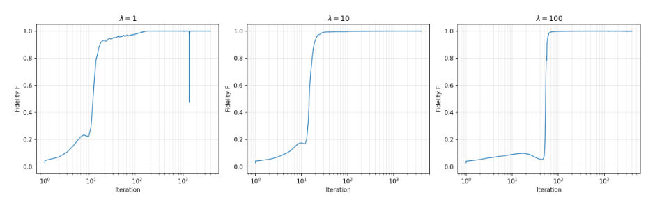
<figcaption class="paper-figure-caption"><b>Fig 1.</b> Figure 1: Fidelity-convergence trajectories of the five-qubit GHZ state under L1 regularization weights λ = 1</figcaption>
</figure>
<figure class="paper-figure-card">
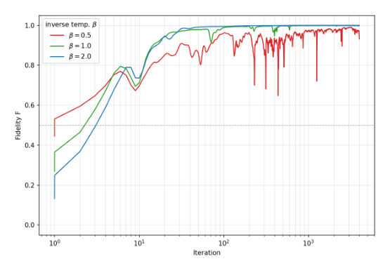
<figcaption class="paper-figure-caption"><b>Fig 2.</b> Figure 2: Fidelity evolution of thermal Gibbs states at inverse temperatures β = 0.5, 1.0, 2.0; the high-</figcaption>
</figure>
<figure class="paper-figure-card">
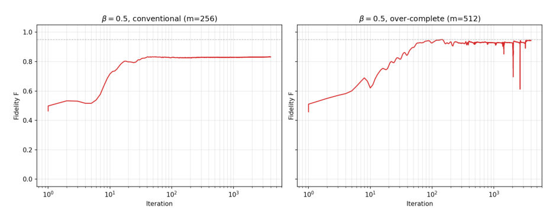
<figcaption class="paper-figure-caption"><b>Fig 3.</b> Figure 3: Reconstruction of the β = 0.5 thermal state under conventional complete-basis sampling (left, m =</figcaption>
</figure>
<figure class="paper-figure-card">
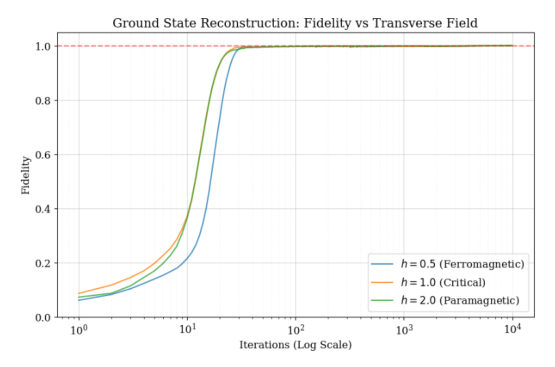
<figcaption class="paper-figure-caption"><b>Fig 4.</b> Figure 4: Ground-state reconstruction fidelity of the 1D transverse-field Ising model at h = 0.5, 1.0, 2.0; all</figcaption>
</figure>
<figure class="paper-figure-card">
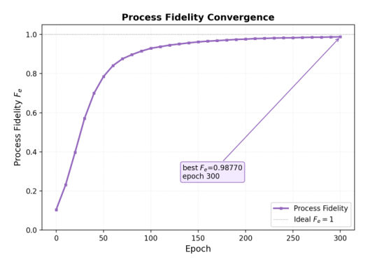
<figcaption class="paper-figure-caption"><b>Fig 5.</b> Figure 5: The reconstructed two-qubit CNOT process reaches a best process fidelity of Fe = 0.98770 at epoch</figcaption>
</figure>
</div>

<p><strong>Summary.</strong> This paper introduces a physics-constrained Conditional GAN to overcome the computational scaling issues in Quantum State and Process Tomography. By embedding a differentiable Cholesky layer, the model learns a direct generative mapping conditioned on Pauli measurements, ensuring the reconstructed states are physically valid. The results demonstrate high fidelity across various complex systems, while also addressing the exponential scaling bottleneck via tensor-network integration.</p>
<p><strong>Why it may be interesting.</strong> This work provides a machine learning approach to tackle the fundamental resource scaling problem in quantum characterization, offering a potentially scalable, data-driven alternative to traditional, computationally intensive inversion methods.</p>
<details>
<summary>Detailed structure</summary>
<p><strong>Main problem.</strong> Quantum State and Process Tomography (QST/QPT) suffer from prohibitive computational scaling as the number of qubits increases.</p>
<p><strong>Main result.</strong> The proposed physics-constrained generative model achieves high-fidelity reconstruction for complex states (like GHZ) and processes (like CNOT) by learning a data-driven mapping.</p>
<p><strong>Method.</strong> It employs a physics-constrained Conditional Generative Adversarial Network (CGAN) that uses a differentiable Cholesky layer to enforce physical constraints (Hermiticity, positive semi-definiteness, unit trace) directly during generation.</p>
<p><strong>Model / system.</strong> The framework is applied to reconstruct quantum states ($
ho$) and quantum processes (channels) conditioned on measured Pauli expectation values. It discusses extending the method to handle the exponential growth bottleneck using tensor-network structures for $n \ge 6$ qubits.</p>
<p><strong>Key observables.</strong> Fidelity ($F$), Pauli expectation values ($    ext{Tr}(
ho A_k)$), and the reconstructed density matrix ($\hat{
ho}_{   heta}$).</p>
<p><strong>Important parameters / regimes.</strong> The strength of the $L^1$ penalty ($\lambda$) is critical for convergence; over-complete measurement bases are needed for high-temperature thermal states.</p>
<p><strong>Assumptions / limitations.</strong> The primary bottleneck remains the exponential growth of the full density matrix representation, necessitating tensor-network integration for scalability.</p>
<p><strong>Figures summary.</strong> Figures illustrate fidelity convergence trajectories for GHZ states based on the L1 penalty weight ($\lambda$), reconstruction of thermal Gibbs states using varying measurement bases, and ground-state reconstruction for the Ising model across different magnetic fields ($h$).</p>
<p><strong>Paper structure.</strong> The paper introduces the CGAN framework, details the Cholesky constraint for physical enforcement, demonstrates its application to QST (e.g., GHZ states, thermal states), extends it to QPT (using the Choi matrix), and concludes with scalability discussions involving tensor networks.</p>
</details>
<details>
<summary>Abstract</summary>
<p>Quantum state and process tomography constitute essential diagnostic tools in quantum information science, yet their standard formulations suffer from prohibitive computational scaling as the number of qubits grows. In this work, we introduce a physics-constrained conditional generative adversarial network that bypasses iterative constrained inversion by directly learning a forward generative mapping conditioned on Pauli expectation values. The generator embeds a differentiable Cholesky layer at its output, which enforces Hermiticity, positive semidefiniteness, and unit trace by construction. Our experiments reveal that the strength of the $L^1$ penalty critically governs the emergence of GHZ coherence during training: an excessively large penalty postpones the coherence onset and yields a prolonged low-fidelity plateau, whereas an intermediate value enables the fastest stable convergence. Moreover, for high-temperature thermal states, an over-complete measurement basis proves necessary to prevent sustained late-stage fluctuations. By extending the same Cholesky constraint to the Choi-matrix representation, the framework naturally accommodates quantum process tomography. For systems with $n \ge 6$ qubits, the exponential growth of the underlying $2^n \times 2^n$ density matrix remains the fundamental bottleneck; we discuss how integrating tensor-network structures can contain the per-iteration cost while preserving reconstruction fidelity. Altogether, these results suggest that physically constrained generative learning offers a scalable and amortizable pathway toward data-driven tomography for noisy intermediate-scale quantum devices.</p>
</details>
<p><sub><a href="#top">↑ back to top</a></sub></p>

<p><a id="paper-2608.28263"></a></p>
<h3 id="rapid-charge-stability-diagram-generation-from-device-level-modeling-of-semiconductor-quantum-dots"><a href="http://arxiv.org/abs/2608.28263v1">Rapid Charge Stability Diagram Generation from Device-level Modeling of Semiconductor Quantum Dots</a></h3>
<p><strong>Authors:</strong> Ron Nodel, David W. Kanaar, Connor Nasseraddin, Tim J. Wilson, Hong-Wen Jiang, Jason R. Petta, Chris Anderson, Mark F. Gyure<br>
<strong>Type:</strong> both · <strong>Category:</strong> strongly correlated electrons · <strong>PDF:</strong> <a href="https://arxiv.org/pdf/2608.28263v1">https://arxiv.org/pdf/2608.28263v1</a><br>
<strong>Analysis basis:</strong> full PDF text, analyzed in chunks
<strong>Topic relevance:</strong> <code>analog quantum simulation</code> <strong>3/5</strong> · <code>methods for driven-dissipative</code> <strong>1/5</strong></p>
<div class="figure-strip-hint">↔ Scroll figures horizontally</div>
<div class="paper-figures-scroll">
<figure class="paper-figure-card">
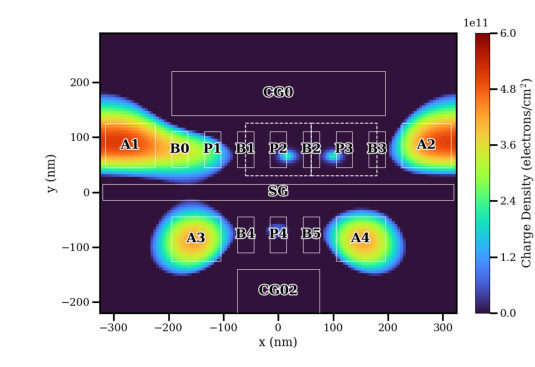
<figcaption class="paper-figure-caption"><b>Fig 1.</b> FIG. 1. The approximate Tunnel Falls gate geometry and calculated charge density. The gate names are overlayed, with the MDMM subdomains shown by dashed lines around P2 and P3. The two-dimensional charge density associated with one electron in both P2 and P3 (1,1) is shown in the color map and is found using the autotuning procedure described in Section II A, integrated over the quantum well thickness. This is a triple quantum dot tuned up as a double quantum dot, with P1 and B1 acting as accumulation gates, following standard experimental tune-up. Sensor accumulation gates are modeled as smaller for computational efficiency and have minimal effect on the P2-P3 charge stability diagram.</figcaption>
</figure>
<figure class="paper-figure-card">
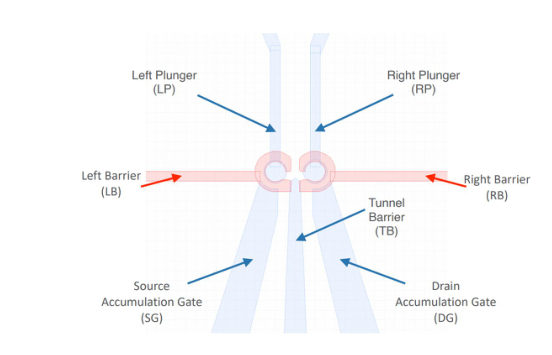
<figcaption class="paper-figure-caption"><b>Fig 2.</b> FIG. 2. The schematic layout of the overlapping gate device design with each gate described. Additional information on this device is described in Section III.</figcaption>
</figure>
<figure class="paper-figure-card">
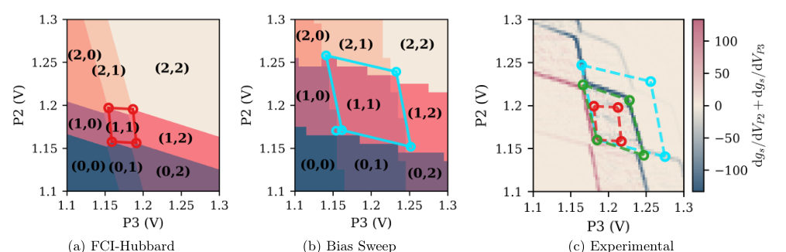
<figcaption class="paper-figure-caption"><b>Fig 3.</b> FIG. 3. The Intel device charge stability diagrams found using three methods. (a) A Hubbard model parameterized using five autotuned points indicated by blue circles in (b), with an FCI calculation at these points. This parameterized model was then used to generate the rest of the diagram, with the (1,1) charge cell displayed in red. (b) The charge stability diagram obtained by running self-consistent Schrödinger-Poisson simulations at 441 (21 × 21) points in voltage space, with the autotuned points shown as reference. (c) The experimental data acquired using the procedure outlined in Sec. II C. The 5 nm HfO2 charging cells associated with the FCI-Hubbard for the (dashed red) and Autotuned...</figcaption>
</figure>
<figure class="paper-figure-card">
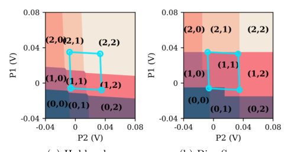
<figcaption class="paper-figure-caption"><b>Fig 4.</b> FIG. 4. The overlapping gate device charge stability diagrams found using two simulation methods. (a) A Hubbard model parameterized using only five autotuned points (overlaid in blue) with an FCI calculation. This parameterized model was then used to generate the rest of the diagram. (b) The charge stability diagram obtained by running self-consistent Schrödinger-Poisson simulations at 169 (13 × 13) points in voltage space, with the blue autotuned points shown as refer- ence.</figcaption>
</figure>
<figure class="paper-figure-card">
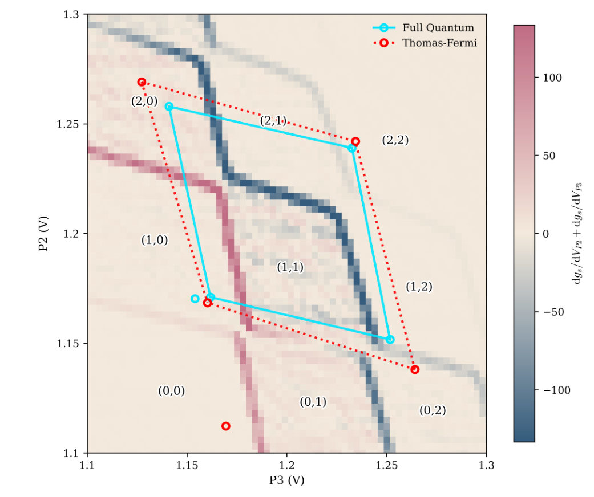
<figcaption class="paper-figure-caption"><b>Fig 5.</b> FIG. 5. Comparison of the Thomas–Fermi and fully quantum charge models. Two autotuning runs are overlaid: the semiclassical Thomas–Fermi model (red and dotted) and the quantum model (blue and solid). The Thomas–Fermi model overestimates the charging energies relative to the fully quantum model, and the fully quantum model overestimates charging energies relative to the experiment.</figcaption>
</figure>
</div>

<p><strong>Summary.</strong> This work presents a novel, computationally efficient workflow to generate charge stability diagrams for semiconductor quantum dots. By combining advanced device simulations (MDMM/Schrödinger-Poisson) with Full Configuration Interaction calculations, the authors parameterize an effective Hubbard model. This model allows for rapid prediction of device behavior, showing promising agreement with experimental results and paving the way for predictive quantum device modeling.</p>
<p><strong>Why it may be interesting.</strong> The development of a predictive 'digital twin' model for quantum dot charge states, moving from expensive first-principles simulations to rapid, effective Hamiltonian descriptions, is highly relevant for designing and controlling quantum computing hardware.</p>
<details>
<summary>Detailed structure</summary>
<p><strong>Main problem.</strong> Characterizing charge stability diagrams for semiconductor quantum dot devices is computationally expensive using full gate-voltage sweeps via self-consistent Schrödinger-Poisson calculations.</p>
<p><strong>Main result.</strong> The derived Hubbard model, parameterized using a combination of MDMM simulations and FCI calculations, successfully reproduces charge stability diagrams with qualitative agreement to experimental data.</p>
<p><strong>Method.</strong> The authors combine Multi-Domain Multi-Model (MDMM) Schrödinger-Poisson simulations with an automated tuning routine to identify gate voltages, which are then used alongside Full Configuration Interaction (FCI) calculations to parameterize an effective Hubbard model.</p>
<p><strong>Model / system.</strong> The system is a layered semiconductor quantum dot device (e.g., Intel Tunnel Falls Si/SiGe). The physics is modeled using the extended Hubbard Hamiltonian, which captures intra-site and inter-site Coulomb interactions.</p>
<p><strong>Key observables.</strong> Charge stability diagrams, charging energies, lever arms, and interdot Coulomb interactions.</p>
<p><strong>Important parameters / regimes.</strong> Gate voltages ($V_1, V_2$), Hubbard parameters ($U_1, U_2, U_{12}$), and dielectric thicknesses ($    ext{HfO}_2$ variation).</p>
<p><strong>Assumptions / limitations.</strong> The method relies on approximating the complex device physics by parameterizing a simplified Hubbard model using a small set of self-consistent simulations and assuming the validity of a constant lever arm matrix.</p>
<p><strong>Figures summary.</strong> Figures illustrate the device geometry, the application of MDMM subdomains, and the resulting charge stability diagrams comparing theory to experiment.</p>
<p><strong>Paper structure.</strong> The paper first establishes the computational bottleneck of full simulations, then details the MDMM/autotuning approach to extract parameters, parameterizes the Hubbard model, and finally validates the model by comparing predictions against experimental charge stability diagrams and testing its applicability to different architectures.</p>
</details>
<details>
<summary>Abstract</summary>
<p>Self-consistent Schrödinger-Poisson calculations are a powerful tool for predicting the behavior of layered semiconductor quantum dot devices. However, characterization of charge stability diagrams through fully simulated gate-voltage sweeps is computationally expensive. Combining a Multi-Domain Multi-Model (MDMM) approach with an automated tuning routine, we identify gate voltages associated with selected charge configurations. This small set of self-consistent simulations can be augmented with Full Configuration Interaction (FCI) energy calculations to extract charging energies, lever arms, and interdot Coulomb interactions to directly parameterize a Hubbard model for rapid charge stability diagram generation. For an Intel Tunnel Falls Si/SiGe device, we demonstrate the Hubbard model's ability to reproduce charge stability diagrams at a fraction of the computational cost in comparison to voltage bias sweeps. We further compare the simulated diagrams to experimental data and demonstrate qualitative agreement. Our result represents a step towards predictive digital twin models for semiconductor quantum dot devices. Finally, we apply this workflow towards lever arm engineering in a second device, demonstrating that the method extends to multiple architectures.</p>
</details>
<p><sub><a href="#top">↑ back to top</a></sub></p>

<p><a id="paper-2608.28028"></a></p>
<h3 id="sound-propagation-in-one-dimensional-quantum-droplets"><a href="http://arxiv.org/abs/2608.28028v1">Sound propagation in one-dimensional quantum droplets</a></h3>
<p><strong>Authors:</strong> Zizhou Yuan, Jiarui Xiao, Xiao-Long Chen<br>
<strong>Type:</strong> theory · <strong>Category:</strong> quantum gases · <strong>PDF:</strong> <a href="https://arxiv.org/pdf/2608.28028v1">https://arxiv.org/pdf/2608.28028v1</a><br>
<strong>Analysis basis:</strong> full PDF text, analyzed in chunks
<strong>Topic relevance:</strong> <code>analog quantum simulation</code> <strong>3/5</strong> · <code>Keldysh / 2PI / non-Gaussian methods</code> <strong>1/5</strong></p>
<div class="figure-strip-hint">↔ Scroll figures horizontally</div>
<div class="paper-figures-scroll">
<figure class="paper-figure-card">
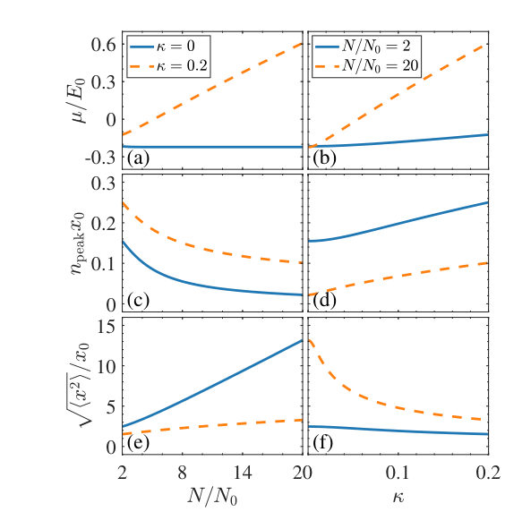
<figcaption class="paper-figure-caption"><b>Fig 1.</b> FIG. 1. Ground-state properties for various values of con- finement strength κ (left column) and particle number N/N0 (right column). The chemical potential µ, peak density npeak with total density normalized to unity, and root-mean-square radius √</figcaption>
</figure>
<figure class="paper-figure-card">
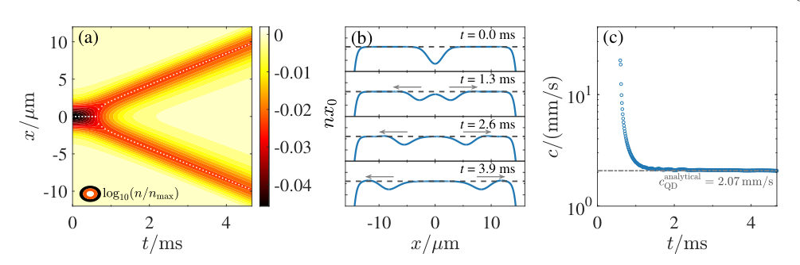
<figcaption class="paper-figure-caption"><b>Fig 2.</b> FIG. 2. Schematic illustration of sound-wave excitation and velocity extraction for κ = 0 and N/N0 = 50. (a) Spatiotemporal contour plot of the total density n(x, t) with the color gradient scaled by log10(n/nmax). The density evolution shows the splitting of the initial density dip into two outward-propagating dips indicated by white dots. (b) Instantaneous density profiles with the dip splitting and moving at various times t = 0, 1.3, 2.6, and 3.9 ms. The gray dashed lines indicate the unperturbed flat-top density baseline, and gray arrows mark the propagation directions of the density dips. (c) Instantaneous sound velocity c obtained from the motion of the density-dip minimum. The gray...</figcaption>
</figure>
<figure class="paper-figure-card">
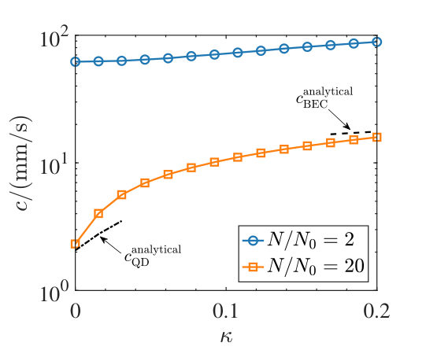
<figcaption class="paper-figure-caption"><b>Fig 3.</b> FIG. 4. Sound velocity c as a function of confinement strength κ for particle numbers N/N0 = 2 (blue circles) and N/N0 = 20 (orange squares). Here, the black dash-dotted and dashed lines denote the analytical sound velocities of the quantum droplet and the weakly interacting BEC for N/N0 = 20, re- spectively. The other properties of the figure are the same as Fig. 3.</figcaption>
</figure>
<figure class="paper-figure-card">
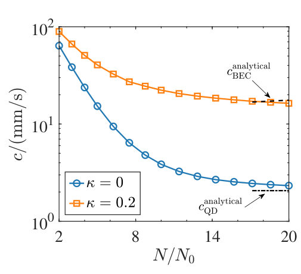
<figcaption class="paper-figure-caption"><b>Fig 4.</b> FIG. 3. Sound velocity c as a function of particle number N for confinement strengths κ = 0 (blue circles) and κ = 0.2 (orange squares). The solid lines with hollow symbols repre- sent the results from numerical simulations of the extended GPE, while the black dash-dotted and dashed lines denote the analytical sound velocity for the quantum droplet canalytical QD in Eq. (11) for κ = 0 and that for a weakly interacting BEC canalytical BEC = √</figcaption>
</figure>
<figure class="paper-figure-card">
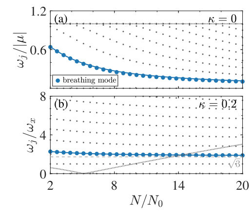
<figcaption class="paper-figure-caption"><b>Fig 5.</b> FIG. 5. Collective excitation frequencies ωj as functions of particle number N/N0 for two confinement strengths (a) κ = 0 and (b) κ = 0.2. The excitation frequencies are shown in units of the particle-emission threshold |µ| and the har- monic trapping frequency ωx, respectively. All dots denote the low-lying excitation spectrum in Eq. (9) obtained from the linearization technique, and the breathing mode is high- lighted by blue circles. For comparison, the breathing-mode frequencies in Eq. (14) obtained from the sum-rule approach using the super-Gaussian ansatz are denoted by the blue lines. The gray dotted lines denote the particle-emission threshold |µ|, and the gray dashed line marks the...</figcaption>
</figure>
</div>

<p><strong>Summary.</strong> This paper theoretically investigates sound propagation in 1D quantum droplets, showing that their acoustic behavior deviates significantly from standard BECs due to self-binding and quantum fluctuations. By comparing real-time wave dynamics with excitation spectrum analysis, the authors demonstrate that sound velocity is highly sensitive to droplet size and external trapping, providing a sensitive probe for quantum fluid physics.</p>
<p><strong>Why it may be interesting.</strong> This work provides a detailed theoretical framework for understanding how quantum fluctuations and finite-size effects modify fundamental properties like sound propagation in ultracold atomic systems, offering testable predictions for current experimental setups.</p>
<details>
<summary>Detailed structure</summary>
<p><strong>Main problem.</strong> The paper investigates the sound propagation and acoustic response in one-dimensional quantum droplets, contrasting this behavior with that observed in conventional Bose-Einstein condensates (BECs).</p>
<p><strong>Main result.</strong> The sound velocity is strongly dependent on the droplet's finite size and quantum-pressure contribution, decreasing as the droplet profile flattens, while external confinement enhances this velocity.</p>
<p><strong>Method.</strong> The study employs a combination of real-time simulations by introducing localized density perturbations and analyzing the low-energy excitation spectrum via linearization of the extended Gross-Pitaevskii equation.</p>
<p><strong>Model / system.</strong> The system models 1D quantum droplets formed by a symmetric Bose-Bose mixture, governed by an effective energy density functional incorporating a repulsive Lee-Huang-Yang (LHY) correction. The dynamics are described by the time-dependent extended Gross-Pitaevskii equation.</p>
<p><strong>Key observables.</strong> Sound velocity ($c$), collective excitation frequencies ($\omega_j$), chemical potential ($\mu$), and droplet density profile evolution.</p>
<p><strong>Important parameters / regimes.</strong> Particle number ($N$), external harmonic confinement strength ($\kappa$), and the crossover between self-bound quantum droplets and conventional BECs.</p>
<p><strong>Assumptions / limitations.</strong> The analysis relies on the linear-response regime following the removal of an excitation barrier, and the comparison between dynamical measurements and spectrum analysis is a key diagnostic tool.</p>
<p><strong>Figures summary.</strong> Figures illustrate the evolution of droplet morphology (e.g., $\mu$, $n_{	ext{peak}}$, $\sqrt{\langle x^2 
angle}$) as a function of particle number and confinement, and compare calculated excitation frequencies under different conditions.</p>
<p><strong>Paper structure.</strong> The paper systematically analyzes the acoustic response by first establishing the theoretical framework (extended GPE), then using real-time dynamics to measure sound velocity, and finally comparing these results with predictions derived from the low-energy excitation spectrum and sum-rule analysis.</p>
</details>
<details>
<summary>Abstract</summary>
<p>Sound propagation in quantum droplets differs from that in conventional Bose-Einstein condensates (BECs) because of their self-bound nature and the role of quantum fluctuations. We investigate sound propagation in one-dimensional quantum droplets formed by a symmetric Bose-Bose mixture, focusing on finite-size and confinement effects. Using the extended Gross-Pitaevskii equation, we extract the sound velocity from the real-time propagation of localized density perturbations and compare it with the low-energy excitation spectrum. We find that, unlike in a conventional BEC, the sound velocity of a finite droplet is strongly affected by its density profile and quantum-pressure contribution. It decreases with increasing particle number as the droplet evolves from a Gaussian-like to a flat-top profile, approaching the bulk quantum-droplet value. In contrast, external harmonic confinement compresses the droplet and enhances the sound velocity, driving the system toward the acoustic behavior of a trapped BEC. Our results establish sound propagation as a sensitive probe of finite-size effects and the crossover between self-bound quantum droplets and conventional Bose gases, and suggest a feasible route for experimental observation in ultracold $^{39}$K droplets.</p>
</details>
<p><sub><a href="#top">↑ back to top</a></sub></p>

<p><a id="paper-2608.28494"></a></p>
<h3 id="casimir-electrostatic-pull-in-in-nanoelectromechanical-actuators-differentiable-design-sensitivities-and-the-damping-dependent-collapse-boundary"><a href="http://arxiv.org/abs/2608.28494v1">Casimir-electrostatic pull-in in nanoelectromechanical actuators: Differentiable design sensitivities and the damping-dependent collapse boundary</a></h3>
<p><strong>Authors:</strong> N. S. Akintsov, A. P. Nevecheria, S. N. Andreev, Qing-Hua Qin<br>
<strong>Type:</strong> theory · <strong>Category:</strong> numerical methods · <strong>PDF:</strong> <a href="https://arxiv.org/pdf/2608.28494v1">https://arxiv.org/pdf/2608.28494v1</a><br>
<strong>Analysis basis:</strong> full PDF text, analyzed in chunks
<strong>Topic relevance:</strong> <code>methods for driven-dissipative</code> <strong>3/5</strong></p>
<div class="figure-strip-hint">↔ Scroll figures horizontally</div>
<div class="paper-figures-scroll">
<figure class="paper-figure-card">
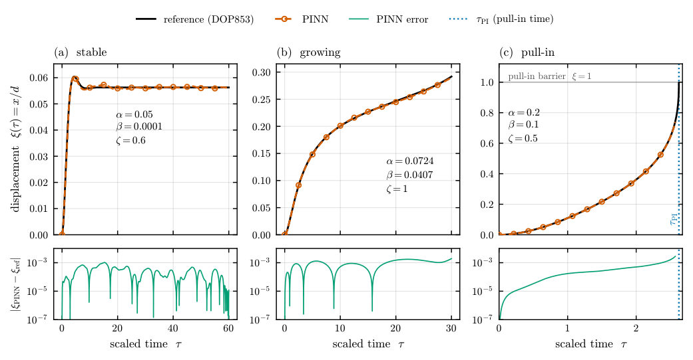
<figcaption class="paper-figure-caption"><b>Fig 1.</b> FIG. 1. Representative normalized-displacement trajectories ξ(τ) = x/d for the three dynamical regimes of Eq. (2): (a) stable oscillation (α = 0.05, β = 10−4, ζ = 0.6) settling to ξ ≈0.056; (b) slow monotonic approach to a Casimir-shifted equilibrium (ξ ≈0.29) (α = 0.0724, β = 0.0407, ζ = 1.0); and (c) pull-in collapse (α = 0.20, β = 0.10, ζ = 0.5): the gap closes at τPI = 2.6226 (dotted line), and the last 2% of that interval carries ξ from 0.742 to the barrier ξ = 1 (gray line). Solid curves are the adaptive DOP853 reference, integrated through to the barrier; open markers are the physics-informed neural- network (PINN) solution, drawn only on its training window [0, 0.98 τPI]. The strip...</figcaption>
</figure>
<figure class="paper-figure-card">
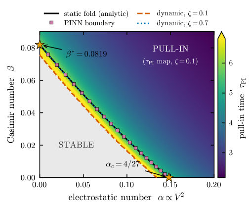
<figcaption class="paper-figure-caption"><b>Fig 2.</b> FIG. 2. Pull-in phase diagram in the (α, β) control-parameter plane at damping ζ = 0.1. The color map gives the dynamic pull-in time τPI(α, β) for trajectories launched from rest; the gray region is stable. The solid line is the analytic quasi-static fold, Eq. (5), the square markers are the boundary located by the parametric PINN, and the dashed and dotted lines are the from-rest dynamic boundaries at ζ = 0.1 and ζ = 0.7. Stars mark the endpoints αc = 4/27 at β = 0 and β∗= 256/3125 = 0.0819 at α = 0. The dynamic boundary at ζ = 0.1 lies inside the fold by a kinetic-overshoot margin of mean width 0.0117 in α, and τPI diverges as the boundary is approached.</figcaption>
</figure>
<figure class="paper-figure-card">
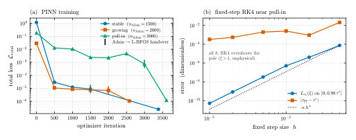
<figcaption class="paper-figure-caption"><b>Fig 3.</b> FIG. 4. Numerical diagnostics. (a) Composite-loss histories for the three PINN trajectory trainings. Each run hands over from Adam to L-BFGS at its own iteration, 1500, 2000, and 3000, marked by a vertical tick in the color of that curve. The abscissa counts Adam steps up to the tick and L-BFGS func- tion evaluations after it, and the L-BFGS phase is logged only at its final evaluation, so the closing segment of each curve spans unsampled iterations. (b) Fixed-step classical fourth- order Runge–Kutta (RK4) near the pull-in pole: for h ≤0.01 the displacement error follows the fourth-order prediction to within 2.5%, while every tested step h ∈{0.05, . . . , 0.001} overshoots the movable...</figcaption>
</figure>
<figure class="paper-figure-card">
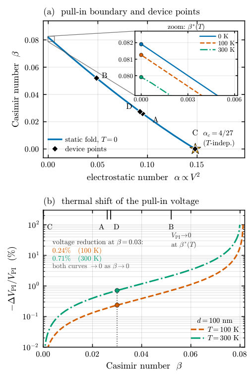
<figcaption class="paper-figure-caption"><b>Fig 4.</b> FIG. 3. Classical-limit upper bound on the thermal Lifshitz contraction of the pull-in boundary for a d = 100 nm gap. (a) Static boundary in the (α, β) plane at T = 0 with the four device operating points of Table IV. The β = 0 endpoint αc = 4/27 is purely electrostatic and therefore temperature independent, and device C (β = 8.1 × 10−5) sits on it. The inset resolves the Casimir-axis intercept, which contracts from β∗= 0.0819 at 0 K to 0.0813 at 100 K and 0.0799 at 300 K. Outside that corner the three boundaries separate by less than the line width. (b) Relative reduction of the pull-in voltage, −∆VPI/VPI = 1 − p</figcaption>
</figure>
<figure class="paper-figure-card">
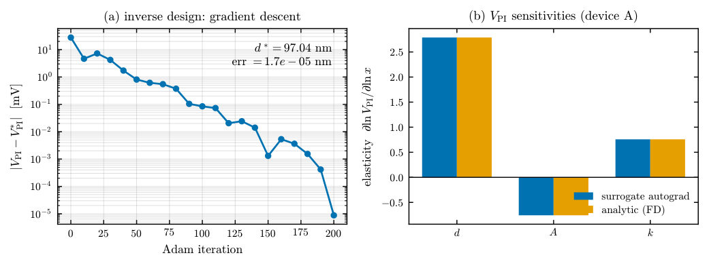
<figcaption class="paper-figure-caption"><b>Fig 5.</b> FIG. 5. The differentiable surrogate as a design tool. (a) Gradient-based inverse design: with area and stiffness fixed, Adam on the gap through the differentiable fold network drives the pull-in voltage to the target V ∗ PI = 0.30 V, converging to d∗= 97.04 nm and reproducing the analytic root to ∼10−5 nm. (b) Pull-in-voltage elasticities ∂ln VPI/∂ln x for device A with respect to gap d, area A, and stiffness k, obtained by automatic differentiation through the surrogate (blue) and validated against a finite-difference evaluation of the analytic pipeline (orange). Each pair carries its elasticity and the relative disagreement of the underlying derivative, 3.4 × 10−6 or smaller. Table S5 of...</figcaption>
</figure>
</div>

<p><strong>Summary.</strong> This work tackles the complex physics of pull-in instability in NEMS actuators driven by Casimir and electrostatic forces. The authors employ Physics-Informed Neural Networks (PINNs) trained in a specialized rapidity coordinate to overcome numerical difficulties near collapse singularities. This advanced computational approach allows for highly accurate determination of design sensitivities and mapping of the full, damping-dependent collapse boundary.</p>
<p><strong>Why it may be interesting.</strong> The application of PINNs to solve complex, non-linear, time-dependent physical systems, especially those with singularities, represents a powerful extension of ML techniques into computational physics, particularly relevant for modeling open quantum systems dynamics.</p>
<details>
<summary>Detailed structure</summary>
<p><strong>Main problem.</strong> The paper analyzes the pull-in instability in NEMS actuators caused by competing electrostatic and Casimir forces, focusing on accurately determining design sensitivities and the dynamic collapse boundary.</p>
<p><strong>Main result.</strong> A Physics-Informed Neural Network (PINN) trained in a rapidity coordinate successfully reproduces the known static pull-in fold with high accuracy and extends the analysis to the complex, damping-dependent collapse boundary where no closed-form solution exists.</p>
<p><strong>Method.</strong> The core methodology involves using PINNs trained on a rapidity coordinate transformation of the governing non-linear oscillator equation to solve the dynamics near singularities, coupled with automatic differentiation for sensitivity analysis.</p>
<p><strong>Model / system.</strong> The system is a single-degree-of-freedom (SDOF) lumped oscillator modeling NEMS actuators, governed by forces derived from electrostatic ($\propto (d-x)^{-2}$) and Casimir ($\propto (d-x)^{-4}$) interactions.</p>
<p><strong>Key observables.</strong> Pull-in voltage ($V_{PI}$), design sensitivities ($\partial V_{PI}/\partial p$), and the gap closure dynamics near the collapse threshold.</p>
<p><strong>Important parameters / regimes.</strong> Damping ratio ($\zeta$), Casimir strength ($eta$), Electrostatic strength ($\alpha$), and the gap size ($d$).</p>
<p><strong>Assumptions / limitations.</strong> The analysis uses the ideal-conductor model for the Casimir force, which is noted to be an upper bound, and the PINN approach requires careful handling of the movable pole singularity.</p>
<p><strong>Figures summary.</strong> Figures illustrate displacement trajectories in different regimes (stable, monotonic, collapse) comparing PINN results to reference solutions, and show the evolution of the pull-in phase diagram across varying damping ratios.</p>
<p><strong>Paper structure.</strong> The paper establishes the physical model, develops the PINN framework using a rapidity coordinate to handle singularities, validates the PINN against known analytic solutions (the fold), and then applies the differentiable framework to calculate sensitivities and map the full dynamic collapse boundary.</p>
</details>
<details>
<summary>Abstract</summary>
<p>Nanoelectromechanical actuators operating at sub-100-nm gaps collapse through a pull-in instability set by competing electrostatic and Casimir forces. The quasi-static fold that bounds their safe operating range has been known in closed form for three decades, together with the Casimir ceiling above which no static equilibrium survives, which fixes the smallest gap a given stiffness and area can hold open against the quantum vacuum. That fold does not give the threshold reached from rest, its dependence on damping, or the design sensitivities of either. We train a physics-informed neural network in a rapidity coordinate that maps the movable pull-in pole to infinity, which keeps the residual bounded across the collapse threshold where fixed-step Runge-Kutta integration steps into unphysical states. Differentiating the trained surrogate returns pull-in-voltage sensitivities that match the closed-form fold to a relative error of $3\times10^{-6}$ and inverts a device specification to a gap of 97.036 nm at a target actuation voltage. Applied to the from-rest boundary, which carries no closed form once the damping is finite, it supplies the same sensitivities where no analytic root exists. We prove that this boundary is bracketed by two closed-form curves, that it is nondecreasing in the damping ratio, that it merges with the fold once the damping ratio exceeds $2^{-1/4}$, and that the gap closes as $(τ_*-τ)^{2/5}$. Numerically the merger already occurs at $0.396$, and the growth of the collapse time changes there from logarithmic to inverse square root. The classical-limit bound on the thermal Lifshitz derating is at the percent level, and the physical shift at these gaps lies orders of magnitude below it.</p>
</details>
<p><sub><a href="#top">↑ back to top</a></sub></p>

<p><a id="paper-2608.27582"></a></p>
<h3 id="network-steering-with-arbitrarily-low-detection-efficiency-of-any-entangled-measurement"><a href="http://arxiv.org/abs/2608.27582v1">Network steering with arbitrarily low detection efficiency of any entangled measurement</a></h3>
<p><strong>Authors:</strong> Shubhayan Sarkar<br>
<strong>Type:</strong> theory · <strong>Category:</strong> quantum information and computing · <strong>PDF:</strong> <a href="https://arxiv.org/pdf/2608.27582v1">https://arxiv.org/pdf/2608.27582v1</a><br>
<strong>Analysis basis:</strong> full PDF text, analyzed in chunks
<strong>Topic relevance:</strong> <code>quantum measurements</code> <strong>3/5</strong></p>
<div class="figure-strip-hint">↔ Scroll figures horizontally</div>
<div class="paper-figures-scroll">
<figure class="paper-figure-card">
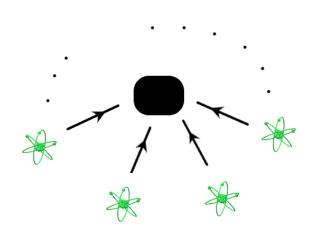
<figcaption class="paper-figure-caption"><b>Fig 1.</b> FIG. 1. Witnessing entanglement in measurements. To de- tect entanglement in the measurement acting on N subsys- tems, one needs to consider N independent trusted sources that generate local states and send them to the untrusted mea- surement. From the obtained statistics, one can infer whether the measurement has entanglement or not.</figcaption>
</figure>
<figure class="paper-figure-card">
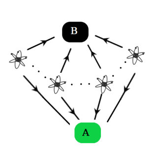
<figcaption class="paper-figure-caption"><b>Fig 2.</b> FIG. 2. Swap-steering scenario. Alice and Bob are spatially separated and each of them receives N subsystems from the untrusted sources. On the received subsystem Bob performs a single measurement while Alice being trusted performs a to- mography on her subsystem. From the experiment, they ob- tain the correlations {p(a, b|i1 . . . iN)}.</figcaption>
</figure>
</div>

<p><strong>Summary.</strong> This paper develops a protocol, termed 'swap-steering,' to demonstrate quantum steering in network settings. It overcomes the major experimental hurdle of low detector efficiency by showing that the required violation can be detected even with imperfect detectors, provided the sources have sufficient visibility. This significantly advances the feasibility of loophole-free quantum nonlocality tests.</p>
<p><strong>Why it may be interesting.</strong> It provides a robust theoretical framework for loophole-free quantum tests that can be implemented using current, imperfect technology, which is highly relevant for experimental quantum information science.</p>
<details>
<summary>Detailed structure</summary>
<p><strong>Main problem.</strong> The paper addresses the challenge of demonstrating quantum steering (asymmetric nonlocality) in a loophole-free manner, particularly when limited by low detector efficiency.</p>
<p><strong>Main result.</strong> Quantum steering can be demonstrated for any non-zero detection efficiency using a 'swap-steering' protocol, and if sources are perfect, this can be achieved even with arbitrarily low detection efficiency.</p>
<p><strong>Method.</strong> The authors construct and analyze 'swap-steering witnesses' to detect quantum steering by comparing predicted correlations against bounds derived from a Source-Only-Hidden-State (SOHS) model.</p>
<p><strong>Model / system.</strong> The study focuses on quantum networks involving two parties (Alice and Bob) receiving subsystems from multiple classically correlated sources. The core model is the swap-steering scenario.</p>
<p><strong>Key observables.</strong> Swap-steering inequality value ($S_{\{E_b\}}$), detection efficiency ($\eta$), and source visibility ($v$).</p>
<p><strong>Important parameters / regimes.</strong> Critical visibility ($v_c$), non-zero detection efficiency ($\eta \in (0, 1]$).</p>
<p><strong>Assumptions / limitations.</strong> The analysis assumes the correlations can be bounded by an SOHS model, and the initial challenge is overcoming the requirement for high-efficiency detectors.</p>
<p><strong>Figures summary.</strong> Figure 1 illustrates witnessing entanglement in measurements using multiple trusted sources, and Figure 2 illustrates the swap-steering setup involving multiple sources.</p>
<p><strong>Paper structure.</strong> The paper first establishes the theoretical framework for witnessing steering using witnesses, then develops the swap-steering inequality by comparing quantum predictions to SOHS bounds, culminating in the demonstration that the inequality can be violated under realistic, low-efficiency conditions.</p>
</details>
<details>
<summary>Abstract</summary>
<p>Quantum nonlocality and its asymmetric counterpart, quantum steering, are among the most intriguing manifestations of quantum mechanics. From a theoretical perspective, they are not only of fundamental significance but also hold promise for a wide range of applications. However, the stringent technological requirements for their experimental observation in a loophole-free way have largely restricted their realization to foundational demonstrations. A major challenge in these setups is the limited detection efficiency of current detectors as to observe nonlocality or steering in the standard scenarios, one requires detectors above a certain critical efficiency which can only be achieved with superconducting detectors. Considering the simplest quantum network, we demonstrate here that quantum steering between two parties, can be demonstrated for any non-zero detection efficiency, if the sources in the network generate states above a critical visibility well-within the current practical limits. This form of quantum steering in networks, is termed swap-steering. Moreover, when the sources are perfect, swap-steering can be observed using any entangled measurement on the untrusted side, even with arbitrarily low detection efficiency. Consequently, two major loopholes, the detection-loophole as well as free-will loophole can be closed easily in quantum steering experiments, when implemented using networks.</p>
</details>
<p><sub><a href="#top">↑ back to top</a></sub></p>

<p><a id="paper-2608.27751"></a></p>
<h3 id="noise-robust-navigation-from-an-adaptive-run-and-tumble-policy"><a href="http://arxiv.org/abs/2608.27751v1">Noise-robust navigation from an adaptive run-and-tumble policy</a></h3>
<p><strong>Authors:</strong> Aniruddha Datta, Shiladitya Banerjee<br>
<strong>Type:</strong> theory · <strong>Category:</strong> statistical mechanics · <strong>PDF:</strong> <a href="https://arxiv.org/pdf/2608.27751v1">https://arxiv.org/pdf/2608.27751v1</a><br>
<strong>Analysis basis:</strong> full PDF text, analyzed in chunks
<strong>Topic relevance:</strong> <code>Keldysh / 2PI / non-Gaussian methods</code> <strong>2/5</strong> · <code>driven-dissipative phase transition</code> <strong>2/5</strong> · <code>methods for driven-dissipative</code> <strong>2/5</strong> · <code>non-equilibrium universality</code> <strong>2/5</strong> · <code>quantum measurements</code> <strong>2/5</strong> · <code>analog quantum simulation</code> <strong>1/5</strong> · <code>correlated / nonlocal dissipation</code> <strong>1/5</strong></p>
<div class="figure-strip-hint">↔ Scroll figures horizontally</div>
<div class="paper-figures-scroll">
<figure class="paper-figure-card">
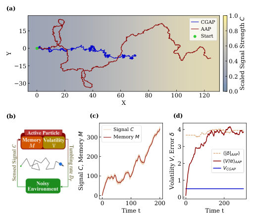
<figcaption class="paper-figure-caption"><b>Fig 1.</b> FIG. 1. (a) Representative trajectories of the Adaptive Active Parti- cle and the Constant-Gain Active Particle in a linear signal gradient along the x direction, with additive white noise (not shown in the background coloration). The AAP travels farther along the gradient than the CGAP in the same time. (b) Schematic of the model, par- alleling the agent–environment loop of reinforcement learning. (c) Signal C and Memory M of the AAP over the trajectory shown in (a). M tracks Cl closely. (d) Volatility and prediction error for the AAP and CGAP over the trajectories shown in (a). The scaled volatility of the AAP slowly tracks the average prediction error. In contrast the volatility of the...</figcaption>
</figure>
<figure class="paper-figure-card">
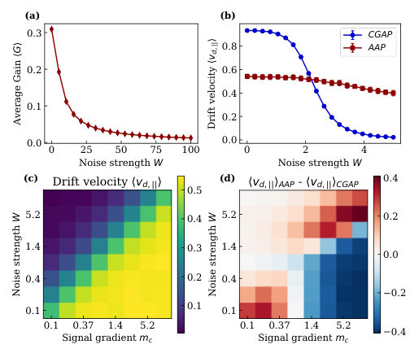
<figcaption class="paper-figure-caption"><b>Fig 2.</b> FIG. 2. (a) The average gain ⟨G⟩= ⟨β/(kBT +V)⟩of the AAP de- creases with the standard deviation of the Gaussian white noise in the signal. (b) Drift velocity along the signal gradient against noise level for the CGAP and the AAP. The CGAP performs better in quiet environments but the AAP outperforms the CGAP at high noise strengths. (c) Drift velocity along the signal gradient across varying noise level and signal gradient for the AAP. (d) Difference in drift ve- locity along gradient between AAP and CGAP across varying noise strength and signal gradient. For a given signal gradient, the AAP performs better than the CGAP at higher W.</figcaption>
</figure>
<figure class="paper-figure-card">
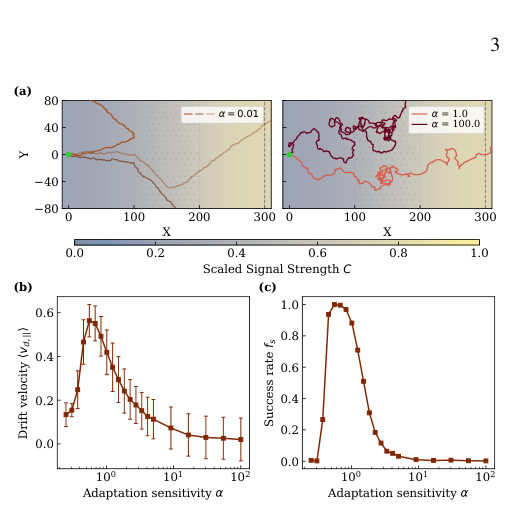
<figcaption class="paper-figure-caption"><b>Fig 3.</b> FIG. 3. (a) Trajectories of the AAP in an alternating noise topogra- phy with varying adaptation sensitivity α. Left panel shows multiple trajectories at low α and right panel shows trajectories at intermedi- ate and high values of α. The signal has a linear gradient in the +x direction, noise amplitude W = 10.0 in the middle textured region and W = 1.0 everywhere else. (b) Drift velocity along the gradient for the AAP across varying sensitivities. ⟨vd,||⟩peaks around α ≈0.6 and decreases for very high and very low values of α. (c) The suc- cess rate of particles, defined as the fraction of trajectories that cross a predefined distance from the start (dotted line in (a)) in a given time,...</figcaption>
</figure>
<figure class="paper-figure-card">
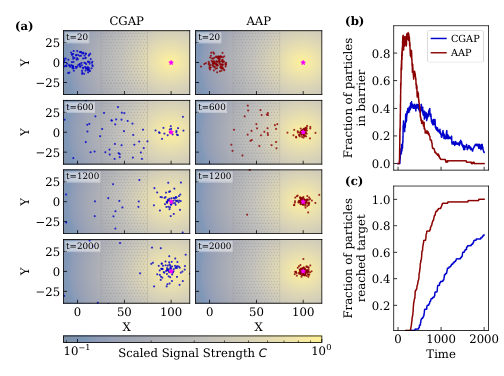
<figcaption class="paper-figure-caption"><b>Fig 4.</b> FIG. 4. (a) Snapshots of collections of particles, CGAP (left) and AAP (right), searching for a point source of signal (magenta star) across a noise barrier (textured in gray). The signal decays exponen- tially from the source in the radial direction. The noise in the barrier is 20 times the surroundings. The CGAPs spend a longer time in- side the barrier and form a looser cluster around the target at the end compared to the AAPs. (b) Fraction of particles in the barrier over time. A larger fraction of CGAPs remain caught in the barrier at higher timepoints compared to the AAPs. (c) Fraction of particles that reach the target over time. All AAPs reach the target in a much shorter time...</figcaption>
</figure>
</div>

<p><strong>Summary.</strong> This work develops a theoretical model for how organisms navigate using noisy sensory inputs, proposing that variance adaptation is key to robustness. By comparing adaptive and non-adaptive movement policies, the authors show that adaptation allows particles to maintain directed motion even when environmental noise is high. This provides a quantitative framework for understanding noise resilience in biological sensing and movement.</p>
<p><strong>Why it may be interesting.</strong> While focused on biological motility, the underlying mathematical framework—optimality principles, noise filtering, and non-equilibrium steady states—shares conceptual links with open quantum systems where environmental noise dictates system dynamics and optimal control strategies.</p>
<details>
<summary>Detailed structure</summary>
<p><strong>Main problem.</strong> The paper investigates how motile organisms maintain robust navigation when sensory signals are corrupted by noise, focusing on the role of variance adaptation in their movement policy.</p>
<p><strong>Main result.</strong> Adaptive particles (AAP) significantly outperform constant-gain particles (CGAP) at high noise levels, demonstrating that variance adaptation is crucial for sustaining directed movement in noisy environments.</p>
<p><strong>Method.</strong> The policy is derived by maximizing a utility function subject to a relative entropy penalty, leading to the analysis of mean drift velocity using Fokker-Planck equation solutions and approximations.</p>
<p><strong>Model / system.</strong> The system is modeled as a minimal active Brownian particle undergoing run-and-tumble motion, sensing a noisy signal $C(\mathbf{r},t) = S(\mathbf{r}) + \xi$. The particle's rotational diffusivity adapts based on the prediction error.</p>
<p><strong>Key observables.</strong> Average response gain ($\langle G 
angle$) and mean drift velocity ($\langle v_d 
angle$) along the signal gradient.</p>
<p><strong>Important parameters / regimes.</strong> Noise strength ($W$), adaptation sensitivity ($\alpha$), and the intrinsic diffusion constants ($D_t, D_r$).</p>
<p><strong>Assumptions / limitations.</strong> The analysis uses an approximation ($eta\mu \ll \Theta$) for analytical tractability, and the adaptation mechanism is treated as costless.</p>
<p><strong>Figures summary.</strong> Figures compare AAP and CGAP trajectories and plot average gain and drift velocity versus noise strength, showing AAP's superior performance at high noise.</p>
<p><strong>Paper structure.</strong> The paper introduces the minimal active Brownian particle model, derives the optimal run-and-tumble policy incorporating variance adaptation, and then analyzes the resulting transport properties by comparing AAP and CGAP performance across varying noise levels.</p>
</details>
<details>
<summary>Abstract</summary>
<p>How do organisms navigate when the signals guiding them are noisy? Variance adaptation, the rescaling of sensitivity to noise, is common in sensory systems, but its role in navigation is unexplored. We introduce a minimal active Brownian particle whose run-and-tumble policy follows from an optimality principle. Variance adaptation emerges as part of this policy. Adaptation keeps chemotactic drift finite as noise grows, while a non-adaptive particle's collapses exponentially. Adaptation also carries a cost, degrading performance in quiet environments and requiring a tuned adaptation sensitivity.</p>
</details>
<p><sub><a href="#top">↑ back to top</a></sub></p>

<p><a id="paper-2608.28531"></a></p>
<h3 id="positivity-constraints-on-the-dynamics-of-cusped-impurities-in-cfts"><a href="http://arxiv.org/abs/2608.28531v1">Positivity constraints on the dynamics of cusped impurities in CFTs</a></h3>
<p><strong>Authors:</strong> Jeevan Chandra<br>
<strong>Type:</strong> theory · <strong>Category:</strong> other · <strong>PDF:</strong> <a href="https://arxiv.org/pdf/2608.28531v1">https://arxiv.org/pdf/2608.28531v1</a><br>
<strong>Analysis basis:</strong> full PDF text, analyzed in chunks
<strong>Topic relevance:</strong> <code>Keldysh / 2PI / non-Gaussian methods</code> <strong>2/5</strong> · <code>methods for driven-dissipative</code> <strong>2/5</strong> · <code>analog quantum simulation</code> <strong>1/5</strong> · <code>correlated / nonlocal dissipation</code> <strong>1/5</strong> · <code>driven-dissipative phase transition</code> <strong>1/5</strong> · <code>non-equilibrium universality</code> <strong>1/5</strong> · <code>quantum measurements</code> <strong>1/5</strong></p>
<div class="figure-strip-hint">↔ Scroll figures horizontally</div>
<div class="paper-figures-scroll">
<figure class="paper-figure-card">
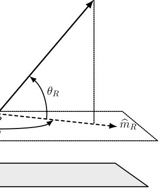
<figcaption class="paper-figure-caption"><b>Fig 1.</b> Figure 2: The figure describes the geometry of the non-planar cusp. The defect rays meet at the cusp denoted P. θL,R are the elevation angles of the defect rays in their respective defect planes. ψ is the azimuthal angle between the defect planes. The cusp P is located at a distance y above the shaded boundary plane.</figcaption>
</figure>
<figure class="paper-figure-card">
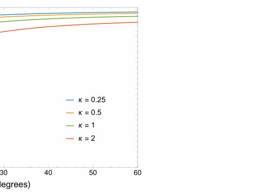
<figcaption class="paper-figure-caption"><b>Fig 2.</b> Figure 3: This is a graph of the function Gκ(θ) that governs the coefficient of the IR cusp logarithm in the D5-ending phase. It can be also be interpreted as the interface-particle potential for an oblique defect ray making an angle θ with the interface. We have plotted the function for different flux parameters κ. The curves approach the limiting value −κ as θ →π</figcaption>
</figure>
<figure class="paper-figure-card">
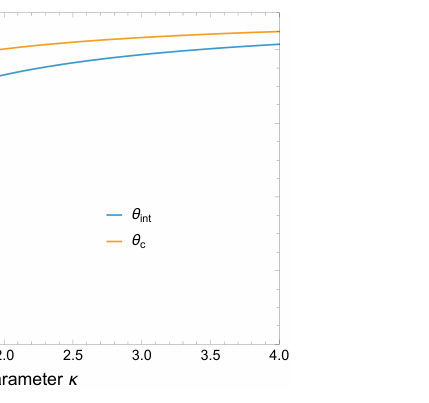
<figcaption class="paper-figure-caption"><b>Fig 3.</b> Figure 4: A plot of the threshold angle θint below which the worldsheet in the vacuum saddle intersects the D5-brane, compared with the angle θc at which the vacuum saddle and the D5- ending saddle exchange dominance, for a range of the flux parameter κ. Importantly, the plot illustrates that θc &gt; θint so both the saddles exist independently across the transition.</figcaption>
</figure>
<figure class="paper-figure-card">
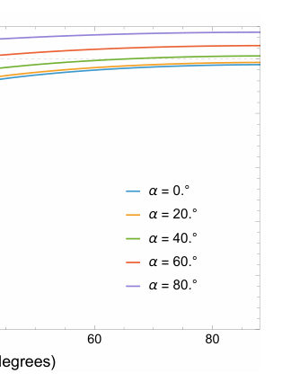
<figcaption class="paper-figure-caption"><b>Fig 4.</b> Figure 5: This is a graph of the function Gκ(θ, α) governing the free energy of the generalized cusp in the D5-ending phase, against the geometric angle θ for various values of the scalar polarization angle α. The flux parameter is chosen to be κ = 0.1 for this plot. Observe that as we increase the value of α, the function could be positive for large-enough geometric angles.</figcaption>
</figure>
</div>

<p><strong>Summary.</strong> This work extends the concept of the cusp anomalous dimension to defects near boundaries in CFTs, deriving powerful non-perturbative constraints using reflection positivity. The authors apply these constraints to various models, culminating in a holographic calculation that predicts a geometric phase transition. This advances the understanding of defect dynamics in strongly coupled quantum field theories.</p>
<p><strong>Why it may be interesting.</strong> While focused on CFTs, the use of reflection positivity and boundary constraints provides powerful mathematical tools applicable to analyzing correlation functions and stability in strongly interacting quantum systems, which has parallels in AMO physics.</p>
<details>
<summary>Detailed structure</summary>
<p><strong>Main problem.</strong> The paper generalizes the concept of the cusp anomalous dimension to cusped line defects situated near a planar conformal boundary or interface.</p>
<p><strong>Main result.</strong> It derives non-perturbative constraints on the free energy coefficients, manifesting as negative semi-definiteness of the mixed angular Hessian, and finds a Gross-Ooguri-like phase transition in the holographic D3-D5 defect CFT.</p>
<p><strong>Method.</strong> The primary method involves applying Euclidean reflection positivity to the free energy functional, alongside analyzing holographic calculations in the D3-D5 setup.</p>
<p><strong>Model / system.</strong> The study focuses on Conformal Field Theories (CFTs) with cusped line defects, ranging from free scalar/Maxwell theories to strongly coupled holographic D3-D5 defect CFTs.</p>
<p><strong>Key observables.</strong> The free energy $F(	heta_L, 	heta_R, \psi; y)$, the cusp anomalous dimension, and the coefficients of the logarithmic terms ($    ext{AIR}$).</p>
<p><strong>Important parameters / regimes.</strong> The geometry is parameterized by three angles ($    heta_L,     heta_R, \psi$) and the perpendicular distance $y$ of the cusp from the boundary.</p>
<p><strong>Assumptions / limitations.</strong> The derivation relies on the assumption that the defect CFT is unitary and reflection positive, and the Lorentzian continuation assumes Rindler positivity.</p>
<p><strong>Figures summary.</strong> Figures illustrate the geometry of the planar and non-planar cusps relative to the boundary, and Table 4 summarizes the alternating-sign derivative hierarchy for cusp logarithms in the holographic model.</p>
<p><strong>Paper structure.</strong> The paper first introduces the generalization of the cusp anomalous dimension, derives general positivity constraints using reflection positivity for planar and general cusps, verifies these constraints in simple models, and culminates in a holographic calculation revealing a phase transition.</p>
</details>
<details>
<summary>Abstract</summary>
<p>The cusp anomalous dimension is the universal logarithmic contribution to the free energy of a line defect with a cusp, and provides a useful observable characterizing defect dynamics. We generalize this notion to cusped line defects in the presence of a planar conformal boundary or interface. The geometry is characterized by three angles, and the distance of the cusp from the boundary or interface which separates short-distance and long-distance regimes. The resulting free energy contains two large logarithmic terms: a short-distance contribution governed by the usual vacuum cusp anomalous dimension, and a new long-distance contribution sensitive to the boundary or interface. Using reflection positivity for transverse deformations of the defect rays, we derive several constraints on the coefficients of these logarithmic terms, which can be packaged into negative semi-definiteness of their angular Hessians. We also derive constraints on the continuation of these coefficients to Lorentzian kinematics. We compute these coefficients and verify the constraints explicitly in free scalar and Maxwell theories and in planar $\mathcal N=4$ super-Yang-Mills theory at weak coupling for various choices of boundary conditions. At strong coupling, we compute the logarithmic coefficients in the holographic D3-D5 defect CFT and find a Gross-Ooguri-like phase transition between competing string worldsheets driven by the geometry of the cusp relative to the interface. We also observe a close connection of the cusp free energy in this setup with holographic corner entanglement entropy.</p>
</details>
<p><sub><a href="#top">↑ back to top</a></sub></p>

<p><a id="paper-2608.28289"></a></p>
<h3 id="a-generalized-model-for-disordered-random-sequential-adsorption-with-charge-dependent-deposition"><a href="http://arxiv.org/abs/2608.28289v1">A Generalized Model for Disordered Random Sequential Adsorption with Charge-Dependent Deposition</a></h3>
<p><strong>Authors:</strong> G. Palacios, A. M. S. Macêdo<br>
<strong>Type:</strong> theory · <strong>Category:</strong> statistical mechanics · <strong>PDF:</strong> <a href="https://arxiv.org/pdf/2608.28289v1">https://arxiv.org/pdf/2608.28289v1</a><br>
<strong>Analysis basis:</strong> full PDF text, analyzed in chunks
<strong>Topic relevance:</strong> <code>analog quantum simulation</code> <strong>2/5</strong> · <code>Frenkel-Kontorova</code> <strong>1/5</strong> · <code>Keldysh / 2PI / non-Gaussian methods</code> <strong>1/5</strong> · <code>driven-dissipative phase transition</code> <strong>1/5</strong> · <code>methods for driven-dissipative</code> <strong>1/5</strong> · <code>non-equilibrium universality</code> <strong>1/5</strong></p>
<div class="figure-strip-hint">↔ Scroll figures horizontally</div>
<div class="paper-figures-scroll">
<figure class="paper-figure-card">
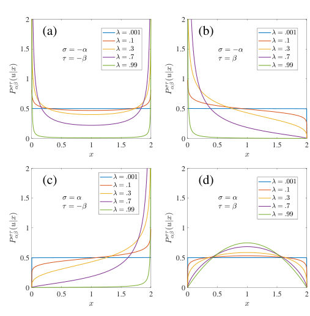
<figcaption class="paper-figure-caption"><b>Fig 1.</b> FIG. 1: Charge-dependent deposition kernels for representative values of λ: (a) opposite charges at both contacts; (b) opposite charges at the left contact and equal charges at the right contact; (c) equal charges at the left contact and opposite charges at the right contact; and (d) equal charges at both contacts.</figcaption>
</figure>
<figure class="paper-figure-card">
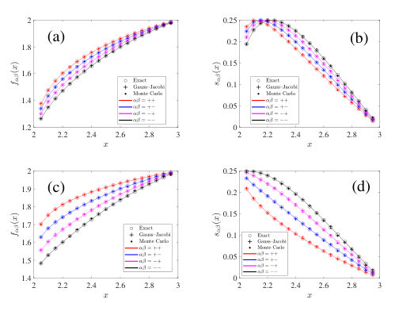
<figcaption class="paper-figure-caption"><b>Fig 2.</b> FIG. 2: Mean occupation fαβ(x) and variance sαβ(x) in the first nontrivial shell 2 ≤x &lt; 3, for λ = 0.65 (top row) and λ = 0.90 (bottom row). The four colors represent the boundary polarities αβ, while circles, crosses, and dots denote, respectively, the ex- act method-of-steps solution, Gauss–Jacobi quadrature, and Monte Carlo simulations.</figcaption>
</figure>
<figure class="paper-figure-card">
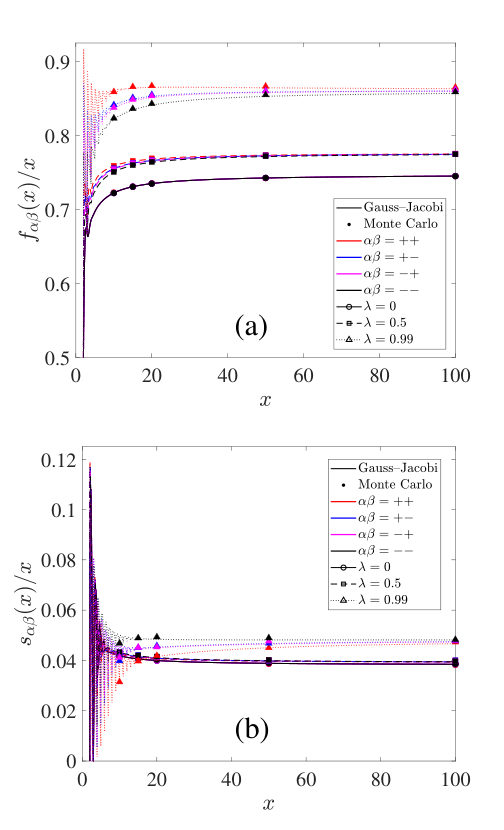
<figcaption class="paper-figure-caption"><b>Fig 3.</b> FIG. 3: Mean occupation density (a) and Variance density (b) for the four boundary polarities and three values of λ. Lines repre- sent the Gauss–Jacobi solution and symbols represent Monte Carlo simulations; colors identify the boundary polarity, while line and marker styles identify λ.</figcaption>
</figure>
<figure class="paper-figure-card">
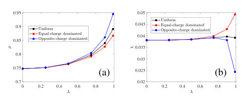
<figcaption class="paper-figure-caption"><b>Fig 4.</b> FIG. 4: Mean occupation density (a) and Variance density (b) for the four boundary polarities and three values of λ. Lines repre- sent the Gauss–Jacobi solution and symbols represent Monte Carlo simulations; colors identify the boundary polarity, while line and marker styles identify λ.</figcaption>
</figure>
</div>

<p><strong>Summary.</strong> This work develops a generalized 1D Random Sequential Adsorption model where particle deposition is biased by electrostatic interactions between charges. By deriving exact statistical recursions and performing asymptotic analysis, the authors show that charge selectivity enhances packing density and reduces statistical fluctuations compared to uniform deposition. This provides a powerful, tractable framework connecting simple geometric processes to complex, interaction-driven disorder.</p>
<p><strong>Why it may be interesting.</strong> While focused on classical adsorption, the concept of using interaction-dependent kernels to model deposition/fragmentation processes is mathematically analogous to modeling energy landscapes or interaction-driven state transitions in quantum many-body systems.</p>
<details>
<summary>Detailed structure</summary>
<p><strong>Main problem.</strong> The paper generalizes the 1D Random Sequential Adsorption (RSA) model to account for charge-dependent deposition probabilities, linking uniform deposition to interaction-driven processes.</p>
<p><strong>Main result.</strong> Charge selectivity significantly increases the packing density, especially when opposite charges dominate the deposition, and the jammed density is proven to be self-averaging.</p>
<p><strong>Method.</strong> The authors derive exact recursion relations using a four-component probability-generating-function equation and validate results using Gauss–Jacobi quadrature and Monte Carlo simulations.</p>
<p><strong>Model / system.</strong> The system is a 1D line where charged segments adsorb sequentially. The deposition probability is governed by a Beta kernel dependent on the charges bounding the available gap and the incoming particle's charges.</p>
<p><strong>Key observables.</strong> Mean and variance of the occupation statistics ($
ho$ and $\chi$), and the jammed density.</p>
<p><strong>Important parameters / regimes.</strong> The interaction parameter $\lambda$ ($0 \le \lambda < 1$), which controls the strength of charge-dependent interactions, and the particle composition ($p$).</p>
<p><strong>Assumptions / limitations.</strong> The model assumes that the deposition probability is prescribed by the boundary charges, allowing for a continuous interpolation between uniform RSA and strongly localized deposition.</p>
<p><strong>Figures summary.</strong> Figures illustrate the charge-dependent deposition kernel for various charge configurations and show the asymptotic mean and variance densities ($
ho$ and $\chi$) as a function of $\lambda$ and particle composition.</p>
<p><strong>Paper structure.</strong> The paper progresses from defining the generalized RSA model via a Beta kernel, deriving the exact recursive equations for statistics, and finally performing asymptotic analysis comparing Monte Carlo and quadrature results to quantify the effect of charge selectivity.</p>
</details>
<details>
<summary>Abstract</summary>
<p>We generalize a one-dimensional random sequential adsorption model (RSA) of charged unit segments in which the deposition position follows a beta kernel determined by the charges bounding the available gap and those of the incoming particle. The interaction parameter \(0\leqλ<1\) interpolates between uniform car parking and strongly localized deposition. We derive a four component generating function equation that provides exact recursions for the complete occupation statistics, although only the mean and variance are analyzed in detail here. Exact finite-shell solutions serve as benchmarks for the Gauss--Jacobi quadrature and Monte Carlo simulations. We prove that, although boundary charges affect finite size behavior, the four boundary states have the same asymptotic mean and variance densities, consequently, we prove that the jammed density is self-averaging. Numerical results show that charge selectivity increases the coverage, especially for mixtures dominated by opposite endpoint charges, which also exhibit strongly reduced fluctuations near \(λ=1\). The model provides a tractable connection between uniform RSA, dynamically generated disorder, and interaction-driven deposition.</p>
</details>
<p><sub><a href="#top">↑ back to top</a></sub></p>

<p><a id="paper-2608.27951"></a></p>
<h3 id="multi-dimensional-spectroscopy-of-mobile-excitons-in-two-dimensional-semiconductors"><a href="http://arxiv.org/abs/2608.27951v1">Multi-dimensional spectroscopy of mobile excitons in two-dimensional semiconductors</a></h3>
<p><strong>Authors:</strong> Ned Wheaton, Jeffrey A. Davis, Jesper Levinsen, Meera M. Parish<br>
<strong>Type:</strong> theory · <strong>Category:</strong> other · <strong>PDF:</strong> <a href="https://arxiv.org/pdf/2608.27951v1">https://arxiv.org/pdf/2608.27951v1</a><br>
<strong>Analysis basis:</strong> full PDF text, analyzed in chunks
<strong>Topic relevance:</strong> <code>Keldysh / 2PI / non-Gaussian methods</code> <strong>2/5</strong> · <code>methods for driven-dissipative</code> <strong>2/5</strong> · <code>analog quantum simulation</code> <strong>1/5</strong> · <code>interference shaping light</code> <strong>1/5</strong></p>
<div class="figure-strip-hint">↔ Scroll figures horizontally</div>
<div class="paper-figures-scroll">
<figure class="paper-figure-card">

<figcaption class="paper-figure-caption"><b>Fig 1.</b> FIG. 1. Pulse ordering and signal separation. (a) The time ordering of the excitation pulses and delays between them, ti, are defined with each pulse having a phase, Φi, which can be defined experimentally in different ways. The signal has a phase given by Φsig = ±Φ1±Φ2±Φ3, where the different sign combinations define the different pathways. (b) In collinear experiments, the phase of each pulse can be given a time de- pendent phase variation by imparting a small frequency shift, ∆ωi. The specific signal pathway can be isolated by selecting the specific beat frequency, ∆ωsig. (c) In non-collinear (box geometry) configurations, the different phases come from the different wavevectors, ki, and...</figcaption>
</figure>
<figure class="paper-figure-card">

<figcaption class="paper-figure-caption"><b>Fig 2.</b> FIG. 2. Double-sided Feynman diagrams for the differ- ent pathways. The rephasing pulse ordering (a) involves three terms in Eq. (19) corresponding to ground-state bleach (GSB), stimulated emission (SE) and excited state absorption (ESA), while the double quantum pulse sequence (b) involves the two terms in Eq. (24). Black arrows pointing to the right (left) represent electric fields with e−iωt (eiωt) and correspond to exciton creation (annihilation) operators. The left-to-right ordering of operators in each expectation value in Eqs. (19) and (24) is obtained by traversing each diagram in a counter- clockwise loop, as illustrated by the red arrows. The overall sign of each diagram is (−1)n,...</figcaption>
</figure>
<figure class="paper-figure-card">

<figcaption class="paper-figure-caption"><b>Fig 3.</b> FIG. 3. Absolute value (a-b) and real part (c-d) of 1Q rephas- ing spectra at t2 = 0 for immobile excitons described by the Hamiltonian in Eq. (27) with homogeneous broadening Γ/εBX = 0.1, and inhomogeneous broadening γ/εBX = 0.2. We have used the biexciton binding energy εBX as a common scale to compare the spectra and we have introduced the nota- tion EBX ≡EX−εBX, the energy needed to create a biexciton starting from a system with a single exciton. The dashed line indicates the diagonal ω3 = −ω1. Panels (a) and (c) show co-circular polarization with interaction U/εBX = 0.01, while panels (b) and (d) show cross-circular polarization with cou- pling λ/εBX = 0.01. The maximum values in all...</figcaption>
</figure>
<figure class="paper-figure-card">

<figcaption class="paper-figure-caption"><b>Fig 4.</b> FIG. 4. Absolute value (a-b) and real part (c-d) of 1Q rephas- ing spectra at t2 = 0 for mobile excitons described by the Hamiltonian in Eq. (31). We show results for the co-circular polarization (a,c), and the cross-circular polarization (b,d), where we take εX = 400 meV and εBX = 20 meV. All spectra are computed with area A · mXεBX = 100, corresponding to an exciton density of 5.25 × 1011 cm−2. We also use a ho- mogeneous broadening Γ/εBX = 0.1, and an inhomogeneous broadening γ/εBX = 0.2. The maximum values in all spectra are normalized to 1.</figcaption>
</figure>
<figure class="paper-figure-card">

<figcaption class="paper-figure-caption"><b>Fig 5.</b> FIG. 5. Behavior of the unbound exciton peak in the cross- circular spectrum of mobile excitons. Full width at half max- imum (solid line) and energy shift (dashed) as a function of exciton density, with homogeneous broadening Γ/εBX = 0.1 and zero inhomogeneous broadening. Axis labels are con- verted to experimental units assuming a biexciton binding energy εBX = 20 meV.</figcaption>
</figure>
</div>

<p><strong>Summary.</strong> This work presents a microscopic theory for Multi-dimensional Coherent Spectroscopy (MDCS) applied to excitons in 2D semiconductors. By incorporating the continuous momentum of excitons, the theory captures complex interaction effects like decoherence and phase-space filling. The results provide a strong theoretical framework validated against recent experimental data on MoSe2.</p>
<p><strong>Why it may be interesting.</strong> The detailed microscopic treatment of coherent spectroscopy in low-dimensional materials provides powerful tools for understanding many-body dynamics, correlation effects, and quasiparticle interactions in solid-state quantum optics.</p>
<details>
<summary>Detailed structure</summary>
<p><strong>Main problem.</strong> To develop a microscopic theory for Multi-dimensional Coherent Spectroscopy (MDCS) that accurately models the delocalized nature of excitons in two-dimensional (2D) semiconductors, moving beyond simple phenomenological models.</p>
<p><strong>Main result.</strong> The theory successfully predicts MDCS spectra that quantitatively agree with experiments on doped monolayer MoSe2, highlighting the crucial role of exciton momentum continuum and phase-space filling effects.</p>
<p><strong>Method.</strong> The authors use time-dependent perturbation theory to calculate the nonlinear optical response, focusing on the third-order polarization ($P^{(3)}$) to probe higher-order correlations.</p>
<p><strong>Model / system.</strong> The system involves excitons (bound electron-hole pairs) in 2D semiconductors, modeled microscopically to account for continuous momentum degrees of freedom and interactions with doping-induced polarons.</p>
<p><strong>Key observables.</strong> MDCS spectra, specifically the third-order response, which reveals signatures of interaction-induced decoherence and phase-space filling.</p>
<p><strong>Important parameters / regimes.</strong> Exciton momentum continuum, doping concentration, and the coupling strength of the optical field ($\hat{V}(t)$).</p>
<p><strong>Assumptions / limitations.</strong> The theory relies on time-dependent perturbation theory and makes approximations regarding the initial state (pure state) and the dipole moment operator.</p>
<p><strong>Figures summary.</strong> Figures illustrate the phase control mechanisms in MDCS using pulse ordering, frequency shifts, and wavevector differences, and show Feynman diagrams for rephasing and double quantum pathways.</p>
<p><strong>Paper structure.</strong> The paper progresses from general MDCS theory (linear response) to modeling mobile excitons, culminating in a detailed, advanced model incorporating doping and polaron interactions in MoSe2.</p>
</details>
<details>
<summary>Abstract</summary>
<p>Multi-dimensional coherent spectroscopy (MDCS) goes beyond standard linear-response probes and provides a powerful tool for investigating correlations between quasiparticles such as excitons (bound electron-hole pairs). Here we present a microscopic theory of MDCS that accounts for the delocalized nature of excitons in two-dimensional semiconductors. In contrast to the more phenomenological few-level approaches typically employed for modelling MDCS, our theory features mobile excitons with continuous momentum degrees of freedom. We find that the energy continuum associated with exciton momenta is crucial for producing interaction-induced decoherence, as well as capturing the interference between different exciton-polaron quasiparticles in the case of charge-doped semiconductors. Crucially, our calculated MDCS spectra agree well with recent experiments on doped monolayer MoSe$_2$ [Hao et al., Nature Communications 8, 15552 (2017)], and they suggest that the interactions between exciton polarons depend strongly on phase-space filling effects, where exciton polarons compete for electrons. Our results demonstrate that microscopic approaches allow one to gain new insights from the fine structure of MDCS on two-dimensional semiconductors, and they illustrate the utility of microscopic approaches to modelling MDCS experiments more generally.</p>
</details>
<p><sub><a href="#top">↑ back to top</a></sub></p>

<p><a id="paper-2608.27564"></a></p>
<h3 id="an-algebraic-obstruction-to-ising-criticality-for-finite-bch-entanglers-in-wavelet-mera"><a href="http://arxiv.org/abs/2608.27564v1">An Algebraic Obstruction to Ising Criticality for Finite-BCH Entanglers in Wavelet MERA</a></h3>
<p><strong>Authors:</strong> Enrico Bertuzzo, Olindo Corradini, Claudia Frugiuele<br>
<strong>Type:</strong> theory · <strong>Category:</strong> statistical mechanics · <strong>PDF:</strong> <a href="https://arxiv.org/pdf/2608.27564v1">https://arxiv.org/pdf/2608.27564v1</a><br>
<strong>Analysis basis:</strong> full PDF text, analyzed in chunks
<strong>Topic relevance:</strong> <code>Keldysh / 2PI / non-Gaussian methods</code> <strong>2/5</strong> · <code>methods for driven-dissipative</code> <strong>2/5</strong> · <code>analog quantum simulation</code> <strong>1/5</strong></p>
<div class="figure-strip-hint">↔ Scroll figures horizontally</div>
<div class="paper-figures-scroll">
<figure class="paper-figure-card">

<figcaption class="paper-figure-caption"><b>Fig 1.</b> Figure 1. Order parameter ⟨ϕ⟩as a function of g for χ = 20 and r = −1.</figcaption>
</figure>
<figure class="paper-figure-card">

<figcaption class="paper-figure-caption"><b>Fig 2.</b> Figure 2. The extracted β parameter as a function of χ for r = −1.</figcaption>
</figure>
<figure class="paper-figure-card">

<figcaption class="paper-figure-caption"><b>Fig 3.</b> Figure 3. Critical coupling gc as a function of χ for r = −1.</figcaption>
</figure>
<figure class="paper-figure-card">

<figcaption class="paper-figure-caption"><b>Fig 4.</b> Figure 4. Energy density as a function of g for χ = 20 (red) and χ = 8 blue.</figcaption>
</figure>
</div>

<p><strong>Summary.</strong> This theoretical work analyzes the critical behavior of the 2D $\phi^4$ model using the Wavelet MERA ansatz restricted to polynomial entanglers. The authors prove an algebraic obstruction: these specific entanglers force the effective potential into a Landau form, thereby restricting the system's critical exponents to the mean-field value ($\beta=1/2$), and failing to reproduce the true Ising critical point ($\beta=1/8$).</p>
<p><strong>Why it may be interesting.</strong> This work provides a rigorous theoretical constraint on the variational power of tensor network methods like MERA, showing that polynomial approximations inherently restrict the accessible critical physics to mean-field regimes, which is crucial for understanding the limitations of modern quantum simulation techniques.</p>
<details>
<summary>Detailed structure</summary>
<p><strong>Main problem.</strong> The paper investigates an algebraic obstruction that limits the universality classes accessible when using finite-BCH polynomial entanglers within the Multi-Scale Entanglement Renormalization Ansatz (MERA) framework.</p>
<p><strong>Main result.</strong> The analysis shows that the effective potential generated by these finite-BCH entanglers is necessarily of Landau form, confining the system's critical behavior to the mean-field universality class, regardless of the entangler's complexity.</p>
<p><strong>Method.</strong> The authors use an analytical approach involving the minimization of the variational energy functional derived from the wavelet MERA, combined with techniques like Taylor expansion and analysis of the effective potential.</p>
<p><strong>Model / system.</strong> The study applies to the interacting phi^4 theory in two dimensions, discretized using the wavelet MERA (wMERA) framework. The Hamiltonian includes quartic interaction terms, and the variational states are constructed using polynomial entanglers whose Baker-Campbell-Hausdorff (BCH) expansion terminates.</p>
<p><strong>Key observables.</strong> Critical exponent $\beta$, effective potential $V_{\text{eff}}(\langle\Phi\rangle)$, and the critical coupling $g_c$.</p>
<p><strong>Important parameters / regimes.</strong> Nonlocality range ($\chi$), variational complexity, and the coupling constant $g$.</p>
<p><strong>Assumptions / limitations.</strong> The analysis is strictly limited to entanglers whose BCH expansion terminates at a finite order (finite-BCH polynomial entanglers).</p>
<p><strong>Figures summary.</strong> Figures illustrate the continuous transition ($\langle\Phi\rangle$ vs $g$) and show that the extracted critical exponent $\beta$ remains consistently near the mean-field value of $1/2$ as the nonlocality range $\chi$ increases.</p>
<p><strong>Paper structure.</strong> The paper establishes the problem by noting the challenge of non-Gaussian entanglers, then details the wMERA setup for $\phi^4$ theory. The core is the analytical derivation showing the effective potential must be Landau-like, leading to the conclusion that only mean-field criticality is accessible with polynomial entanglers.</p>
</details>
<details>
<summary>Abstract</summary>
<p>The computational treatment of non-Gaussian entanglers could pose a significant challenge when extending the Multi-Scale Entanglement Renormalization Ansatz (MERA) to interacting quantum field theories. A natural strategy is therefore to consider polynomial entanglers for which the Baker-Campbell-Hausdorff (BCH) expansion terminates at finite order. In this work, we identify an algebraic obstruction that limits the universality classes accessible to this family of entanglers. Working within the wavelet MERA (wMERA) framework applied to the interacting $φ^4$ theory in two dimensions, we show analytically that the effective potential generated by any finite-BCH polynomial entangler is necessarily of Landau form in the generic case, establishing mean-field universality for the full class; in non-generic, degenerate cases the resulting exponent departs from mean-field but still fails to reproduce the Ising value. As a numerical illustration, the critical exponent $β$ remains consistent with its mean-field value $β= 1/2$ across all ansätze considered, with no drift toward the Ising value $β= 1/8$ as the nonlocality range or variational complexity increases. Reproducing non-mean-field criticality therefore might require non-polynomial or infinite-BCH constructions.</p>
</details>
<p><sub><a href="#top">↑ back to top</a></sub></p>

<p><a id="paper-2608.28418"></a></p>
<h3 id="optomechanical-inertial-reference-for-atom-interferometry"><a href="http://arxiv.org/abs/2608.28418v1">Optomechanical inertial reference for atom interferometry</a></h3>
<p><strong>Authors:</strong> A. Rajagopalan, K. Stolzenberg, D. Thomas, A. Herbst, S. Abend, E. M. Rasel, F. Guzmán, D. Schlippert<br>
<strong>Type:</strong> experiment · <strong>Category:</strong> other · <strong>PDF:</strong> <a href="https://arxiv.org/pdf/2608.28418v1">https://arxiv.org/pdf/2608.28418v1</a><br>
<strong>Analysis basis:</strong> full PDF text, analyzed in chunks
<strong>Topic relevance:</strong> <code>quantum measurements</code> <strong>2/5</strong> · <code>quantum optics experiment</code> <strong>2/5</strong> · <code>interference shaping light</code> <strong>1/5</strong></p>
<div class="figure-strip-hint">↔ Scroll figures horizontally</div>
<div class="paper-figures-scroll">
<figure class="paper-figure-card">

<figcaption class="paper-figure-caption"><b>Fig 1.</b> FIG. 1. Illustration of the hybrid architecture comprising an atom interferometer, an optical resonator, and an inertial test mass with displacement x(t). The zoomed region shows a space-time diagram of a light-pulse atom interferometer employing double-Bragg diffraction with its acceleration measurement axis perpendicular to gravity.</figcaption>
</figure>
<figure class="paper-figure-card">

<figcaption class="paper-figure-caption"><b>Fig 2.</b> FIG. 2. (a) Measuring vibration isolation platform motion os- cillating at its 700 mHz natural frequency using the optome- chanical resonator. The suppressed ambient vibration envi- ronment enables reaching its intrinsic sensitivity limit which is set by the photo detector shot noise at frequencies &gt; 50 Hz. (b) Ambient vibration noise measurement with the same cou- pling configuration to the atom interferometer without the use of vibration isolation. The white noise floor is limited by ambient vibrations and at lower frequencies the spectral den- sity shows a characteristic NHNM dip.</figcaption>
</figure>
<figure class="paper-figure-card">

<figcaption class="paper-figure-caption"><b>Fig 3.</b> FIG. 3. Ambient vibration noise post-correction using the optomechanical resonator signal for pulse separation times T = 2.4 ms to 6 ms. The scattered data points are the normalised atomic population with removed phase ambiguity via vibration noise post-correction comparison to the expected responses (solid blue curves), the gradient density bar highlights population distribution indicating atom interferometer technical noise. The normalised distribution of atom interferometer weighted vibration noise which randomly scans over its phase is depicted in the background (red curve).</figcaption>
</figure>
<figure class="paper-figure-card">

<figcaption class="paper-figure-caption"><b>Fig 4.</b> FIG. 4. (a) Post-corrected T = 2 ms atom interferometer operated under very high ambient vibration correlated with the optomechanical resonator (blue data points) and a simultaneous comparison to the commercial accelerometer (green data points). The solid blue curve displays the expected atom interferometer response fitted to the OMR data. Coupled vibration noise induces an overall spread of ≈50 mm/s2 on the atom interferometer phase response. The atom interferometer technical noise is estimated by Gaussian fitting the individual peaks of its bi-modal kernel density estimation, amounting to an average value of σavg = 0.05. (b) Vibration noise suppression performance using the Titan and...</figcaption>
</figure>
<figure class="paper-figure-card">

<figcaption class="paper-figure-caption"><b>Fig 5.</b> FIG. 5. (a) Measured fundamental in-plane mode of the mechanical resonator via optical readout for operation under ambient atmosphere. (b) The complete optical readout schematic for measuring using the optomechanical resonator. It is a lock-in detection feedback loop based readout scheme using a single EOM sideband that efficiently suppresses low frequency readout noise and increases dynamic range despite the small optical resonator linewidth. The DC source laser optical frequency can possibly be stabilised to an external stable reference or to the probing optical cavity frequency as per experimental convenience to perform vibration measurements, this is indicated by a switch in the...</figcaption>
</figure>
</div>

<p><strong>Summary.</strong> The authors present a novel hybrid inertial sensor that combines an atom interferometer with an optomechanical resonator (OMR). By using the OMR's test mass as a shared reference mirror, the system effectively cancels out vibration noise that typically degrades atom interferometry outside a lab. This approach achieves state-of-the-art sensitivity, making high-precision quantum sensing more viable for field applications.</p>
<p><strong>Why it may be interesting.</strong> This work represents a sophisticated integration of quantum sensing (atom interferometry) with quantum optics/mechanics (optomechanics) to overcome fundamental environmental limitations, which is a key theme in advanced quantum sensing.</p>
<details>
<summary>Detailed structure</summary>
<p><strong>Main problem.</strong> Atom interferometers, while highly sensitive inertial sensors, are limited in deployment due to ambient vibration noise.</p>
<p><strong>Main result.</strong> The hybrid sensor successfully removes vibration-induced phase ambiguity up to $50 	imes 10^{-3} 	ext{ m/s}^2$, reaching the interferometer's intrinsic technical noise limit, surpassing commercial accelerometers.</p>
<p><strong>Method.</strong> The technique fuses an optomechanical resonator (OMR) and an atom interferometer, using the OMR's test mass as the reference mirror to correlate and correct for environmental vibrations.</p>
<p><strong>Model / system.</strong> The system comprises an atom interferometer coupled to an OMR, where the OMR measures displacement using a high-finesse optical cavity. The OMR's resonance frequency is set high (1800 Hz) to ensure a flat mechanical response over the interferometer's operating bandwidth.</p>
<p><strong>Key observables.</strong> Minimum acceleration sensitivity ($1.1 	imes 10^{-6} 	ext{ m/s}^2/\sqrt{	ext{Hz}}$), displacement sensitivity ($8.6 	imes 10^{-15} 	ext{ m}/\sqrt{	ext{Hz}}$), and the recovered interferometer fringe visibility.</p>
<p><strong>Important parameters / regimes.</strong> Bandwidth from sub-Hertz to 2.5 kHz; ambient vibration levels up to $50 	ext{ mm/s}^2$; OMR resonance frequency ($\omega_o = 2\pi \cdot 1800 	ext{ Hz}$).</p>
<p><strong>Assumptions / limitations.</strong> The primary assumption is that fusing the sensors replaces the unknown transfer function between separate devices with the static response of a single mechanical element.</p>
<p><strong>Figures summary.</strong> Figures illustrate the hybrid architecture, the OMR's ability to measure ambient vibration noise, and the post-correction of the atom interferometer signal using the OMR signal compared to classical accelerometer corrections.</p>
<p><strong>Paper structure.</strong> The paper introduces the problem of vibration noise limiting atom interferometers, proposes the hybrid OMR-interferometer architecture, details the measurement techniques and performance metrics, and validates the noise suppression capability against commercial standards.</p>
</details>
<details>
<summary>Abstract</summary>
<p>Atom interferometers are among the most sensitive inertial sensors, yet deployment outside the laboratory is limited by vibration noise, conventionally mitigated by external sensors or bulky isolation. Here we demonstrate a hybrid inertial sensor which fuses an optomechanical resonator and an atom interferometer by exploiting the resonator's test mass as the interferometer's reference mirror. This allows for better correlation than with two separate sensors, whose unknown transfer function is replaced by the static response of one mechanical element. The resonator achieves a displacement sensitivity of $8.6\cdot 10^{-15}$ m/$\sqrt{\mathrm{Hz}}$ with suppressed 1/f noise and yields a minimum acceleration sensitivity of $1.1\cdot10^{-6}$ m/s$^2$/$\sqrt{\mathrm{Hz}}$ over a bandwidth extending from sub-Hertz to 2.5 kHz. Under ambient laboratory conditions the integrated system removes vibration-induced phase ambiguity for accelerations up to $50\cdot 10^{-3}$ m/s$^2$ and reaches the interferometer's technical noise limit, which a commercial force-balance accelerometer does not. Because the resonance-tracking readout is largely independent of the mechanical design, the architecture transfers directly to other precision sensing platforms.</p>
</details>
<p><sub><a href="#top">↑ back to top</a></sub></p>

<p><a id="paper-2608.27680"></a></p>
<h3 id="efficient-perturbations-for-basin-hopping-in-amorphous-glasses"><a href="http://arxiv.org/abs/2608.27680v1">Efficient perturbations for basin hopping in amorphous glasses</a></h3>
<p><strong>Authors:</strong> Coraline Du, Hye Sol Kim, Scott C. Warren<br>
<strong>Type:</strong> theory · <strong>Category:</strong> disordered systems and neural networks · <strong>PDF:</strong> <a href="https://arxiv.org/pdf/2608.27680v1">https://arxiv.org/pdf/2608.27680v1</a><br>
<strong>Analysis basis:</strong> full PDF text, analyzed in chunks
<strong>Topic relevance:</strong> <code>methods for driven-dissipative</code> <strong>2/5</strong> · <code>analog quantum simulation</code> <strong>1/5</strong> · <code>quantum measurements</code> <strong>1/5</strong></p>
<div class="figure-strip-hint">↔ Scroll figures horizontally</div>
<div class="paper-figures-scroll">
<figure class="paper-figure-card">

<figcaption class="paper-figure-caption"><b>Fig 1.</b> Figure 1. Structural perturbation modes used to explore the configurational landscape of Al2O3. Red atoms represent oxygen, and blue atoms represent aluminum. B.​ Relaxation methods Structural relaxations were performed using a neuroevolution potential (NEP) [11] through the calorine CPUNEP calculator. Atomic positions and cell parameters were simultaneously optimized</figcaption>
</figure>
<figure class="paper-figure-card">

<figcaption class="paper-figure-caption"><b>Fig 2.</b> Figure 3. Three runs consisting solely of random angle perturbations.</figcaption>
</figure>
</div>

<p><strong>Summary.</strong> This work addresses the difficulty of sampling the complex energy landscape of amorphous materials by proposing large, nonlocal structural perturbations instead of relying solely on small, local moves. Using amorphous Al2O3, the authors demonstrate that specific perturbations, like the Coordination Balance Perturber, drastically improve the efficiency of finding low-energy structures. This suggests a powerful new class of sampling techniques for computational materials science.</p>
<p><strong>Why it may be interesting.</strong> While focused on classical materials simulation, the methodology of using advanced sampling techniques to navigate high-dimensional, rugged energy landscapes is conceptually related to optimization problems in quantum many-body physics or quantum machine learning.</p>
<details>
<summary>Detailed structure</summary>
<p><strong>Main problem.</strong> The primary challenge is efficiently exploring the complex potential-energy landscapes inherent to amorphous materials for computational structure discovery.</p>
<p><strong>Main result.</strong> Nonlocal, relaxation-assisted perturbations, particularly the Coordination Balance Perturber, significantly improve configurational sampling by accessing low-energy states with far fewer trial moves than conventional local Monte Carlo methods.</p>
<p><strong>Method.</strong> The study compares standard local sampling techniques (Monte Carlo, RMC) against four novel, larger, nonlocal perturbation algorithms applied to structural relaxation simulations.</p>
<p><strong>Model / system.</strong> The model system used is amorphous aluminum oxide (Al2O3), chosen for its disordered network structure that allows for diverse local geometries and coordination environments.</p>
<p><strong>Key observables.</strong> Energy change (Delta E), coordination numbers, and the number of trial moves required to reach low-energy configurations.</p>
<p><strong>Important parameters / regimes.</strong> The simulation utilized a neuroevolution potential (NEP) and employed optimization algorithms like FIRE.</p>
<p><strong>Assumptions / limitations.</strong> The authors assume that nonlocal moves followed by local relaxation can overcome kinetic trapping in local energy minima, though future work suggests improving acceptance criteria to filter out non-productive moves.</p>
<p><strong>Figures summary.</strong> Figures illustrate the structural perturbation modes used on Al2O3, and energy trajectories compare the performance of different movement types, highlighting the superior performance of the Coordination Balance Perturber.</p>
<p><strong>Paper structure.</strong> The paper introduces the problem of landscape exploration, details the development and testing of multiple perturbation types (e.g., Coordination Balance, Random Swap), presents comparative results showing efficiency gains, and concludes with suggestions for mixed-movement sequences and algorithmic refinement.</p>
</details>
<details>
<summary>Abstract</summary>
<p>Efficient exploration of the complex potential-energy landscapes of amorphous materials is central to computational structure discovery and refinement. Conventional Monte Carlo, reverse Monte Carlo, and related methods typically sample configuration space through small, local trial moves and may require millions to tens of millions of moves to converge. Here, we evaluate larger, nonlocal perturbations followed by local geometry relaxation as an alternative sampling strategy. We develop and test four perturbation types using amorphous Al$_2$O$_3$ as a model system. Among them, moving an oxygen atom to change the coordination numbers of two aluminum atoms, allows access to low-energy configurations with substantially fewer trial moves than a conventional Monte Carlo trajectory. These results suggest that relaxation-assisted nonlocal moves could reduce trapping in local minima and improve sampling in structure-search and reverse Monte Carlo workflows.</p>
</details>
<p><sub><a href="#top">↑ back to top</a></sub></p>

<p><a id="paper-2608.27712"></a></p>
<h3 id="efficient-quantum-simulation-of-variable-coefficient-transport-with-continuous-source-injection"><a href="http://arxiv.org/abs/2608.27712v1">Efficient Quantum Simulation of Variable-Coefficient Transport with Continuous Source Injection</a></h3>
<p><strong>Authors:</strong> Mohammad Mehedi Hasan Akash, Turag Dev, Nhat-Quang Nguyen, Yanzhu Chen, Huixuan Wu, Kourosh Shoele<br>
<strong>Type:</strong> theory · <strong>Category:</strong> quantum information and computing · <strong>PDF:</strong> <a href="https://arxiv.org/pdf/2608.27712v1">https://arxiv.org/pdf/2608.27712v1</a><br>
<strong>Analysis basis:</strong> full PDF text, analyzed in chunks
<strong>Topic relevance:</strong> <code>analog quantum simulation</code> <strong>2/5</strong> · <code>methods for driven-dissipative</code> <strong>2/5</strong></p>
<div class="figure-strip-hint">↔ Scroll figures horizontally</div>
<div class="paper-figures-scroll">
<figure class="paper-figure-card">

<figcaption class="paper-figure-caption"><b>Fig 1.</b> FIG. 1: Quantum circuit for one D–A–D time step with nq = 4 (N = 16 Fourier modes). (a) Circuit overview. Sparse binary-tree state preparation, SP(btree), loads the source-corrected state | ˆS⟩directly in the Fourier basis, eliminating a QFT before the first diffusion half-step D(∆t/2). Each diffusion block applies a uniformly controlled Ry (UCRY) operation to the data register and a single ancilla, followed by an IQFT and post-selective ancilla measurement (⊗). The ancilla is reset and reused for the second diffusion half-step, which is preceded by a QFT because the advection step returns the register to the position basis. The advection circuit is detailed in Fig. 2. (b) UCRY...</figcaption>
</figure>
<figure class="paper-figure-card">

<figcaption class="paper-figure-caption"><b>Fig 2.</b> FIG. 2: Quantum circuit for the advection substep Uadv(∆t) via the Gray-code Trotter decomposition (Eq. 14). The green background identifies this circuit as the detailed contents of the green Adv(∆t) box in Fig. 1. The circuit is shown in a two-row layout with vertical tick marks marking the row break. Read left to right, top row: Bin→Gray, a classically precomputed permutation converting the register sys0–sys3 to Gray- code order so that adjacent grid indices m, m + 1 differ in exactly one qubit; even layer, ∆t/2, (nq −1)-controlled Ry(θ) gates on the even edges (m, m + 1), m = 0, 2, 4, . . ., each targeting the single qubit that differs between the two coupled Gray-code labels...</figcaption>
</figure>
<figure class="paper-figure-card">

<figcaption class="paper-figure-caption"><b>Fig 3.</b> FIG. 5: Post-selection statistics across viscosity and hori- zon length. (a) Per-step success probability at the canon- ical viscosity ν = 0.008, recovering toward unity as dis- sipation empties the high-wavenumber modes. (b) Cu- mulative success probability across the viscosity sweep of Table IV. (c) Long-horizon integration to T = 50: relative distance to the exact steady state us = −A−1f, where A is the discrete steady-state advection-diffusion operator and f the discrete forcing vector, along the classical tra- jectory, decaying on the slow-mode timescale τ = 257; the quantum solution at T = 50 (symbol) lies on the classical curve. (d) Cumulative log10 P of the post-selection record...</figcaption>
</figure>
<figure class="paper-figure-card">

<figcaption class="paper-figure-caption"><b>Fig 4.</b> FIG. 6: Transpiled diagnostic of the homogeneous D-A-D quantum kernel for nq = 3–6. (a) Depth and CX count per kernel. (b) Stacked CX contribution by circuit block; the Gray-code advection circuit, which encodes the N values of U(x), dominates at all sizes.</figcaption>
</figure>
<figure class="paper-figure-card">

<figcaption class="paper-figure-caption"><b>Fig 5.</b> FIG. 7: Validation at nq = 5: companion to Fig. 3. (a) Solution field at T = 1.0, ∆t = 10−3, against the DOP853 and matched split-step references. (b) Pointwise error on a logarithmic scale (nq = 5).</figcaption>
</figure>
</div>

<p><strong>Summary.</strong> This paper introduces a novel, qubit-efficient quantum algorithm to simulate variable-coefficient advection-diffusion equations with continuous sources. It achieves this by unitarily implementing the advection term using a Gray-code Trotter sequence and handling diffusion and sources classically. The work demonstrates high accuracy and stability while keeping the required qubit count fixed, making it valuable for near-term quantum hardware.</p>
<p><strong>Why it may be interesting.</strong> It presents a highly optimized quantum circuit structure for simulating complex PDEs, which is a major goal in quantum simulation for condensed matter physics.</p>
<details>
<summary>Detailed structure</summary>
<p><strong>Main problem.</strong> Developing an efficient quantum algorithm to solve a variable-coefficient advection-diffusion equation that includes continuous source injection while maintaining a fixed qubit budget.</p>
<p><strong>Main result.</strong> The proposed method successfully incorporates spatially varying velocity, viscous diffusion, and persistent source injection within a fixed-register qubit architecture, achieving high temporal accuracy.</p>
<p><strong>Method.</strong> A hybrid quantum-classical time-marching algorithm is used, implementing advection via an ancilla-free Gray-code Trotter sequence and handling diffusion/source terms separately.</p>
<p><strong>Model / system.</strong> The system is governed by a forced, variable-coefficient advection-diffusion equation in skew-symmetric form on a periodic domain.</p>
<p><strong>Key observables.</strong> Second-order temporal convergence (fourth-order via Richardson extrapolation), stable evolution over $5 	imes 10^4$ time steps, and the ancillary failure probability.</p>
<p><strong>Important parameters / regimes.</strong> Peak logical requirement of $n_q+1$ qubits; viscosity range (fifty-fold); time steps ($5 	imes 10^4$).</p>
<p><strong>Assumptions / limitations.</strong> Classical readout and state re-preparation remain the main obstacles to coherent multistep evolution; the method assumes a fixed-width kernel structure.</p>
<p><strong>Figures summary.</strong> Figure 9 shows energy growth over $T=50$ steps, confirming agreement between quantum and classical fields to a relative $L_2$ error of $1.8 	imes 10^{-5}$.</p>
<p><strong>Paper structure.</strong> The paper details the governing equation, the quantum circuit architecture, validation against classical integrators, comparison with existing solvers, and a summary.</p>
</details>
<details>
<summary>Abstract</summary>
<p>Quantum time-marching algorithms for transport PDEs often represent variable coefficients and forcing through register-expanding dilations, block-encoding oracles, or repeated postselection. We present an alternative algorithm for a forced variable-coefficient advection-diffusion equation in flow-inspired skew-symmetric form that incorporates spatially varying velocity, viscous dissipation, and persistent source injection with a peak logical requirement of $n_q+1$ qubits. A centered skew-symmetric discretization makes the advection operator strictly skew-Hermitian for arbitrary velocity profiles, enabling an ancilla-free unitary realization using a Gray-code Trotter sequence of controlled-$R_y$ rotations. Diffusion is applied in the Fourier basis through a uniformly controlled rotation on one postselected ancilla, which is measured, reset, and reused between the two diffusion half-steps, while the source is incorporated classically through second-order Strang splitting. Statevector simulations for $N=16$ and $32$ recover second-order temporal convergence against high-accuracy classical solutions, while Richardson extrapolation gives fourth-order accuracy and reduces kernel calls by factors of four to fourteen. Independent tests through $N=256$ confirm second-order spatial consistency. We further show that the per-step ancilla failure probability is proportional to the instantaneous viscous dissipation rate, making postselection cost self-regulating over a fifty-fold viscosity range. Stable evolution is demonstrated for $5\times10^4$ time steps without observable secular error growth, while Gray-code advection accounts for $71$--$95\%$ of transpiled controlled-NOT gates. The fixed-width kernel provides a qubit-efficient building block for near-term hardware studies, although classical readout and state re-preparation remain the main obstacles to coherent multistep evolution.</p>
</details>
<p><sub><a href="#top">↑ back to top</a></sub></p>

<p><a id="paper-2608.28005"></a></p>
<h3 id="projected-q-shells-for-nested-gausslet-bases"><a href="http://arxiv.org/abs/2608.28005v1">Projected q-Shells for Nested Gausslet Bases</a></h3>
<p><strong>Authors:</strong> Steven R. White<br>
<strong>Type:</strong> theory · <strong>Category:</strong> strongly correlated electrons · <strong>PDF:</strong> <a href="https://arxiv.org/pdf/2608.28005v1">https://arxiv.org/pdf/2608.28005v1</a><br>
<strong>Analysis basis:</strong> full PDF text, analyzed in chunks
<strong>Topic relevance:</strong> <code>Keldysh / 2PI / non-Gaussian methods</code> <strong>2/5</strong> · <code>analog quantum simulation</code> <strong>2/5</strong></p>
<div class="figure-strip-hint">↔ Scroll figures horizontally</div>
<div class="paper-figures-scroll">
<figure class="paper-figure-card">

<figcaption class="paper-figure-caption"><b>Fig 1.</b> FIG. 1. Four ways of changing spatial resolution. (a) Adaptive multiwavelet blocks. (b) Wavelet multiresolution. (c) Over- lapping full gausslet patches at several scales. (d) Projected q-shell compression of the same patches. The dashed interior functions in (d) are removed because their space is already supplied by the finer patch.</figcaption>
</figure>
<figure class="paper-figure-card">

<figcaption class="paper-figure-caption"><b>Fig 2.</b> FIG. 2. Parent lattice and two-dimensional q = 5 shell. (a) A distorted parent lattice, the uncontracted central block, and one surrounding shell. (b) WL treats the corners and the four three-function sides separately. (c) PQS starts from the complete 5 × 5 local block. Its 16 products having at least one edge factor are projected onto the shell of parent-lattice sites shown in (a) and then reorthogonalized; the nine middle– middle products are omitted. Panels (b) and (c) have the same number of functions but retain different local polynomial information.</figcaption>
</figure>
<figure class="paper-figure-card">

<figcaption class="paper-figure-caption"><b>Fig 3.</b> FIG. 4. Projected full-configuration-interaction (FCI) errors for H2 with the same H/cc-pV6Z s, p residual-Gaussian supple- ment. At each geometry, every lower-order FCI wave function is projected into the same supplemented PQS ns = 7 basis and its energy is evaluated with the ns = 7 Hamiltonian. The plotted error is this energy minus the FCI complete-basis-set (CBS) limit of Pachucki. Colors and symbols denote ns as in Fig. 3; solid filled symbols denote PQS and dashed open sym- bols WL. The source dimensions are equal at each geometry and order.</figcaption>
</figure>
<figure class="paper-figure-card">

<figcaption class="paper-figure-caption"><b>Fig 4.</b> FIG. 3. Restricted-HF comparison for H2 supplemented by contracted Cartesian H/cc-pV6Z s and p residual Gaussians, at equal PQS and WL dimensions. All three panels plot error magnitudes. Panel (a) compares the IDA Coulomb energy with the parent-basis value for the same converged orbital. Panel (b) uses the RHF energy obtained with the IDA Hamiltonian; panel (c) reevaluates the same orbital with the common parent Hamiltonian. The reference for (b) and (c) is the HF basis-set limit estimated from Cartesian aug-cc-pV5Z and aug-cc-pV6Z. Solid filled symbols denote PQS and dashed open symbols WL.</figcaption>
</figure>
<figure class="paper-figure-card">

<figcaption class="paper-figure-caption"><b>Fig 5.</b> FIG. 5. Numerical realization for an undistorted, unit-spaced parent chain, an outer segment with R = 4, and q = 5. The nine parent gausslets are gray. (a) The five outer-patch COMX functions (blue) and five inner-patch functions (red). (b) The original outer edge functions (dashed) and their projections onto the two endpoint parent gausslets forming the parent- lattice shell (solid), together with the inner-patch functions. The complete-patch union and the projected construction both have rank seven, and their projector residual is 1.12 × 10−15, illustrating Eq. (A17). Vertical offsets are for clarity.</figcaption>
</figure>
</div>

<p><strong>Summary.</strong> This paper introduces Projected q-Shells (PQS), an advanced basis set technique designed to improve upon existing methods for electronic structure calculations. PQS enhances the accuracy and completeness of the basis set representation by mathematically restoring lost polynomial orders during the basis contraction process. This results in more accurate and efficient calculations for molecular electronic properties.</p>
<p><strong>Why it may be interesting.</strong> While focused on quantum chemistry, the core mathematical machinery—developing highly accurate, compact, and systematically improvable basis sets for electron-electron interactions—is crucial for any simulation involving many-body quantum systems, including those studied in AMO physics.</p>
<details>
<summary>Detailed structure</summary>
<p><strong>Main problem.</strong> Electronic-structure calculations require accurately representing both electronic wave functions and the Coulomb interaction using a finite basis set representation.</p>
<p><strong>Main result.</strong> Projected q-Shells (PQS) offer an improvement over standard nested Gausslet constructions by approximately restoring the lost polynomial completeness order, leading to smaller computational errors for small molecules.</p>
<p><strong>Method.</strong> The authors introduce PQS, an advanced basis set construction that improves upon nested Cartesian gausslets by using a projection technique to maintain high local polynomial completeness while keeping the interaction manageable.</p>
<p><strong>Model / system.</strong> The method is applied to electronic structure calculations for atoms and molecules (e.g., H2+, H2, C2), focusing on approximating the computationally expensive four-index Coulomb interaction with a two-index form.</p>
<p><strong>Key observables.</strong> One-electron and interaction errors; polynomial completeness order ($q$ vs $q-2$); mean Cartesian rms width ($\sigma^2$) and relative center shift ($d_{12}$).</p>
<p><strong>Important parameters / regimes.</strong> The basis set parameter $q$ (related to polynomial order) and the degree of coordinate distortion.</p>
<p><strong>Assumptions / limitations.</strong> The ideal model assumes undistorted parent lattices; practical use involves coordinate distortions, which slightly compromise the theoretical equivalence.</p>
<p><strong>Figures summary.</strong> Figure 1 illustrates four methods of spatial resolution change, including PQS compression. Figure 2 compares WL nesting (disjoint pieces) versus PQS (full contraction $
ightarrow$ projection $
ightarrow$ reorthogonalization) in 2D.</p>
<p><strong>Paper structure.</strong> The paper introduces the problem of basis set representation, details the limitations of standard nesting, mathematically derives the PQS construction via the projected-shell theorem, and validates the method by comparing PQS results against standard nesting for small molecules.</p>
</details>
<details>
<summary>Abstract</summary>
<p>Electronic-structure calculations require a finite representation of both the electronic wave functions and their Coulomb interaction. Conventional compact basis sets lead to a four-index interaction. Gausslet basis sets are one of a very small number of approaches that allow a much smaller two-index interaction, similar to a real-space grid, but with far fewer points. The continuing challenge in their development is reducing further the number of functions needed while maintaining high accuracy. Here we introduce projected q-shells (PQS), an improvement to the nested Cartesian gausslets of White and Lindsey. Their standard nesting construction divides a joining shell into disjoint faces, edges, and corners, reducing its polynomial completeness from order q to order q-2. PQS approximately restores the two lost orders. In terms of completeness, we prove that for an ideal, undistorted parent, the span of the PQS basis is equivalent to an overcomplete basis of overlapping patches. Coordinate distortions, which are always used in practice, harm this equivalence only slightly. The moment properties that allow two-index interactions also become inexact, even without distortion, but we show that the improvement in order more than makes up for this loss. For similar basis sizes, PQS gives smaller one-electron and interaction errors on small molecules, such as H2+, H2, and C2, than standard nesting. The improvement is largest for more compact bases with smaller q.</p>
</details>
<p><sub><a href="#top">↑ back to top</a></sub></p>

<p><a id="paper-2608.27944"></a></p>
<h3 id="quantum-geometric-bounds-at-finite-temperature-for-one-dimensional-chiral-systems"><a href="http://arxiv.org/abs/2608.27944v1">Quantum geometric bounds at finite temperature for one-dimensional chiral systems</a></h3>
<p><strong>Authors:</strong> Peng He, Hai-Tao Ding, Yu-Guo Liu<br>
<strong>Type:</strong> theory · <strong>Category:</strong> other · <strong>PDF:</strong> <a href="https://arxiv.org/pdf/2608.27944v1">https://arxiv.org/pdf/2608.27944v1</a><br>
<strong>Analysis basis:</strong> full PDF text, analyzed in chunks
<strong>Topic relevance:</strong> <code>analog quantum simulation</code> <strong>2/5</strong> · <code>Keldysh / 2PI / non-Gaussian methods</code> <strong>1/5</strong> · <code>quantum measurements</code> <strong>1/5</strong></p>
<div class="figure-strip-hint">↔ Scroll figures horizontally</div>
<div class="paper-figures-scroll">
<figure class="paper-figure-card">

<figcaption class="paper-figure-caption"><b>Fig 1.</b> FIG. 1. (a) The Uhlmann phase ΦU of the SSH model as a function of J1/J2. (b) The Uhlmann phase ΦU of the SSH model as a function of temperature T. (c) The Bures Length LB of the SSH model as a function of J1/J2. (d) The Bures Length LB of the SSH model as a function of temperature T.</figcaption>
</figure>
<figure class="paper-figure-card">

<figcaption class="paper-figure-caption"><b>Fig 2.</b> FIG. 2. The two geometric bound for the Bures length of the SSH model at finite temperature T = 0.5. The gray region shows the values of Bures length.</figcaption>
</figure>
<figure class="paper-figure-card">

<figcaption class="paper-figure-caption"><b>Fig 3.</b> FIG. 3. Numerical demonstration for the Bloch Hamiltonian of the SSH model H1,k. (a) Thermal average energy E(β) = Tr(ρQITE(β)H1,k) as a function of inverse temperature β for different momentum sectors k (solid lines), compared with the exact Gibbs state (dashed red line). (b) The Bures metric gkk as a function of momentum k calculated via the QITE method (yellow dashed line) and the exact solution (blue solid line) at β = 2. Both panels are within the topological region (J1 = 0.5, J2 = 1) with time step δτ = 0.1.</figcaption>
</figure>
</div>

<p><strong>Summary.</strong> This paper develops and proves rigorous geometric lower bounds for the Bures length in 1D chiral quantum systems at finite temperatures. By utilizing Uhlmann's framework, the authors establish bounds that smoothly connect the known zero-temperature topological constraints to the high-temperature limit. The results are validated using standard models like the SSH chain.</p>
<p><strong>Why it may be interesting.</strong> The connection between quantum geometry (like Bures distance) and topological invariants at finite temperature is a fundamental, challenging problem in condensed matter theory, relevant to understanding thermalization and quantum information storage.</p>
<details>
<summary>Detailed structure</summary>
<p><strong>Main problem.</strong> The paper establishes rigorous quantum geometric lower bounds for one-dimensional chiral-symmetric systems at finite temperature, addressing the ambiguity of such relations when temperature is non-zero.</p>
<p><strong>Main result.</strong> Two temperature-dependent bounds are derived for the Bures length ($L_B$): one related to the Uhlmann phase angle ($\Theta$), and another involving the minimum energy gap ($\Delta_{\min}$), which interpolates between zero and high temperatures.</p>
<p><strong>Method.</strong> The analysis uses Uhlmann's framework for mixed states to calculate the Bures metric and connection coefficients, deriving bounds through analytical manipulation of these geometric quantities.</p>
<p><strong>Model / system.</strong> The study focuses on general one-dimensional (1D) chiral-symmetric systems, exemplified by the Su-Schrieffer-Heeger (SSH) model and the spinless Kitaev chain model.</p>
<p><strong>Key observables.</strong> Bures length ($L_B$), Uhlmann phase angle ($\Theta$), and the temperature-dependent bound involving the minimum energy gap ($\Delta_{\min}$).</p>
<p><strong>Important parameters / regimes.</strong> Temperature ($T$), minimum energy gap ($\Delta_{\min}$), and the ratio of coupling constants (e.g., $J_1/J_2$ for SSH).</p>
<p><strong>Assumptions / limitations.</strong> The analysis is restricted to 1D chiral-symmetric systems, and some derivations rely on approximations like the QITE method for numerical verification.</p>
<p><strong>Figures summary.</strong> Figures illustrate the comparison of the derived geometric bounds for $L_B$ versus system parameters and temperature, and show numerical verification of the Bures metric calculation using the QITE method.</p>
<p><strong>Paper structure.</strong> The paper first introduces the problem of finite-temperature geometric bounds, derives two distinct analytical bounds for the Bures length using Uhlmann's framework, and then verifies these results numerically using established models like the SSH chain.</p>
</details>
<details>
<summary>Abstract</summary>
<p>The geometry and topology of quantum states are intimately related at zero temperature through exact bounds that constrain geometric quantities from below by topological invariants. At finite-temperature, however, the analogous relations remain unclear. Here we establish rigorous geometric lower bounds for one-dimensional (1D) chiral-symmetric systems at finite temperature within the Uhlmann's framework for mixed states. We show that the Bures length is bounded by a continuous geometric phase angle. We further derive a temperature-dependent bound that interpolates between the zero-temperature limit and a trivial high-temperature regime. Our results are verified analytically and numerically using the Su-Schrieffer-Heeger (SSH) model and the spinless Kitaev chain model. Finally, we discuss potential ways to detect the geometry of the density matrix in quantum circuits, with the quantum imaginary time evolution (QITE) method.</p>
</details>
<p><sub><a href="#top">↑ back to top</a></sub></p>

<p><a id="paper-2608.28379"></a></p>
<h3 id="quantum-federated-learning-based-on-bures-uhlmann-geometry-for-heterogeneous-noisy-clients"><a href="http://arxiv.org/abs/2608.28379v1">Quantum Federated Learning Based on Bures--Uhlmann Geometry for Heterogeneous Noisy Clients</a></h3>
<p><strong>Authors:</strong> Haruki Emori, Masaki Uchihara, Yuuki Tokunaga<br>
<strong>Type:</strong> both · <strong>Category:</strong> quantum information and computing · <strong>PDF:</strong> <a href="https://arxiv.org/pdf/2608.28379v1">https://arxiv.org/pdf/2608.28379v1</a><br>
<strong>Analysis basis:</strong> full PDF text, analyzed in chunks
<strong>Topic relevance:</strong> <code>QC/QI experiment</code> <strong>2/5</strong> · <code>quantum measurements</code> <strong>1/5</strong></p>
<div class="figure-strip-hint">↔ Scroll figures horizontally</div>
<div class="paper-figures-scroll">
<figure class="paper-figure-card">

<figcaption class="paper-figure-caption"><b>Fig 1.</b> FIG. 1. One layer of the shared variational quantum classifier, drawn for three qubits, with the experiments using n = 6 and L = 3. Each layer re-uploads the data through Ry(xj) (green), applies a trainable single-qubit block RzRyRz (blue), and a linear CNOT entangler (pink). After L layers the Pauli observables (23) are measured in three settings (Z, X, Y ) and fed to the shared readout head (24). The three QFL methods use this same circuit and the same head, and differ only in the local update and the aggregation.</figcaption>
</figure>
<figure class="paper-figure-card">

<figcaption class="paper-figure-caption"><b>Fig 2.</b> FIG. 2. Test accuracy against the communication round on MNIST-10 (n = 6 qubits, L = 3 layers, K = 9 clients), evaluated on the reimei-E trapped-ion emulator with 4000 shots per circuit and averaged over three seeds, with error bars the cross-seed standard error. Panels (a)–(d) are the four device-heterogeneity conditions of Table I, namely (a) few shots and strong noise, (b) more shots and strong noise, (c) few shots and weak noise, (d) more shots and weak noise. QFedQGT (solid, red) attains the highest round-averaged accuracy in every panel. The two baselines are closest to it in the weak-noise panels (c), (d) and fall further behind in the strong-noise panels (a), (b). The top and bottom...</figcaption>
</figure>
</div>

<p><strong>Summary.</strong> This paper proposes an advanced framework for Quantum Federated Learning designed for noisy quantum hardware. It leverages the Bures metric and mean Uhlmann curvature—derived from analyzing mixed quantum states—to create a superior aggregation rule. This method dynamically weights clients based on their local noise and parameter incompatibility, leading to better model convergence than standard averaging techniques.</p>
<p><strong>Why it may be interesting.</strong> It directly addresses the practical challenges of applying quantum machine learning algorithms to real, noisy hardware by incorporating advanced concepts from quantum information geometry into the optimization framework.</p>
<details>
<summary>Detailed structure</summary>
<p><strong>Main problem.</strong> Developing a robust aggregation rule for Quantum Federated Learning (QFL) that accurately accounts for data and hardware heterogeneity and noise in quantum devices.</p>
<p><strong>Main result.</strong> The proposed method, utilizing the Bures metric and mean Uhlmann curvature, maintains high accuracy across diverse noise conditions and outperforms standard federated averaging, which degrades under strong noise.</p>
<p><strong>Method.</strong> The authors extend quantum geometry from pure states to mixed states, employing the Bures metric as a local preconditioner and using the mean Uhlmann curvature to develop a dynamic, precision-aware aggregation rule.</p>
<p><strong>Model / system.</strong> The model involves training variational quantum circuits (VQCs) on noisy quantum devices (NISQ era). Clients prepare mixed states $\rho_k(\theta)$ due to hardware noise, necessitating the use of mixed-state geometry.</p>
<p><strong>Key observables.</strong> Bures metric (measures state change rate) and mean Uhlmann curvature (quantifies parameter estimation incompatibility).</p>
<p><strong>Important parameters / regimes.</strong> Depolarizing rates (e.g., 0.4–0.6), data size ($p_k$), and local precision ($
ho_k$).</p>
<p><strong>Assumptions / limitations.</strong> The core novelty is moving the geometric analysis from pure states to the mixed-state regime, which is necessary because pure-state approaches discard crucial correlation information.</p>
<p><strong>Figures summary.</strong> The notes detail comparisons of aggregation weights (QFedQGT vs QFedFisher vs QFedAvg) and the final accuracy results on a trapped-ion quantum emulator.</p>
<p><strong>Paper structure.</strong> The paper introduces the problem, derives the mixed-state geometry (Bures-Uhlmann), proposes the local update (Bures metric) and aggregation rule (Uhlmann curvature), provides theoretical convergence guarantees, and validates the method via empirical simulation on a trapped-ion emulator.</p>
</details>
<details>
<summary>Abstract</summary>
<p>Quantum federated learning enables collaborative model training across quantum devices without sharing raw data, and it faces the data and hardware heterogeneity inherent to noisy quantum devices. Utilizing the quantum geometric tensor is a natural remedy, yet pure-state approaches and diagonal approximations discard the correlations that encode parameter incompatibility. To address this, we extend the parameter-space geometry to the mixed states that noisy clients actually prepare. The real part of the resulting mixed-state geometric tensor is the Bures metric, which measures how fast the physical state changes under parameter variation, and the imaginary part is the mean Uhlmann curvature, which quantifies the incompatibility of estimating multiple parameters simultaneously. Accordingly, we employ the Bures metric as a local preconditioner and use the mean Uhlmann curvature to develop an achievable-precision aggregation rule that dynamically down-weights unreliable clients. Furthermore, we establish theoretical guarantees by proving a convergence theorem and a variance-dominance proposition. Empirical evaluations on a trapped-ion quantum emulator demonstrate that the proposed method maintains high accuracy across diverse device-heterogeneity conditions and outperforms standard federated averaging, whose accuracy degrades under strong noise.</p>
</details>
<p><sub><a href="#top">↑ back to top</a></sub></p>
<hr>
<p>
<a href="index.html">← Index</a>
 · <a href="papers_02.html">← Previous</a> · <a href="papers_04.html">Next →</a>
</p>
<hr>

</body>
</html>
